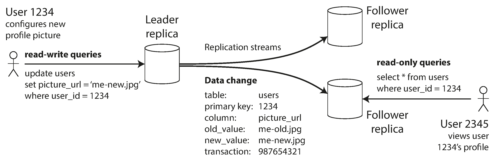
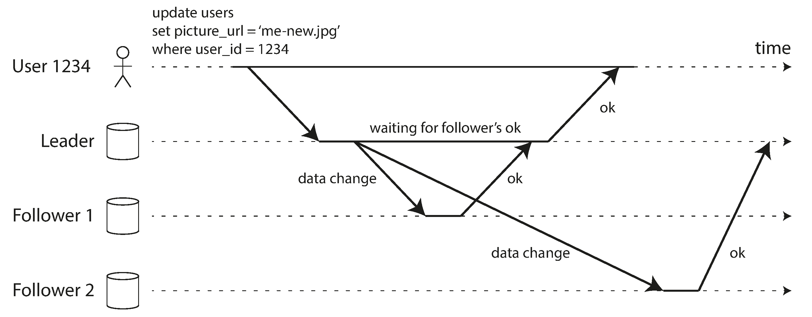
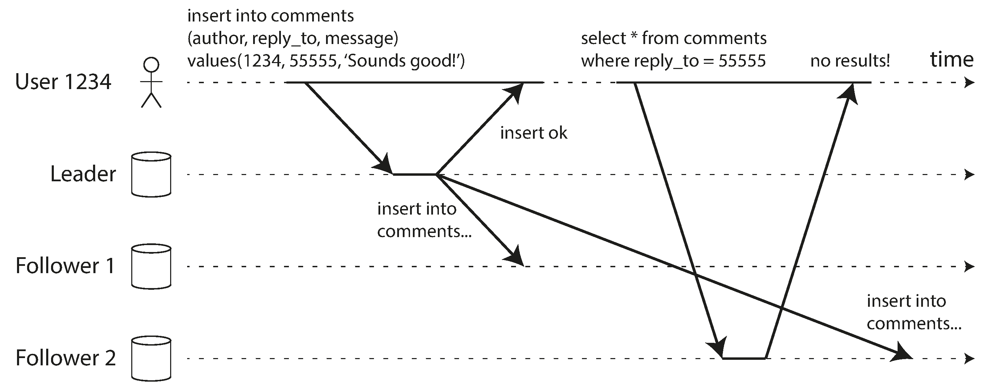
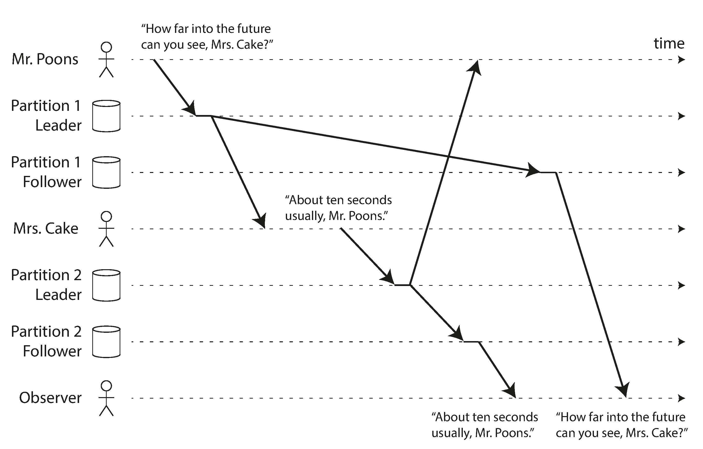
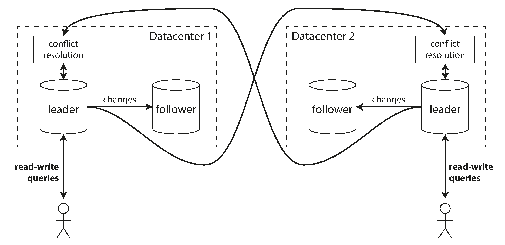
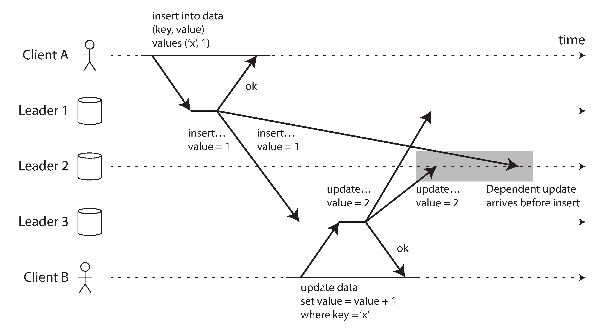
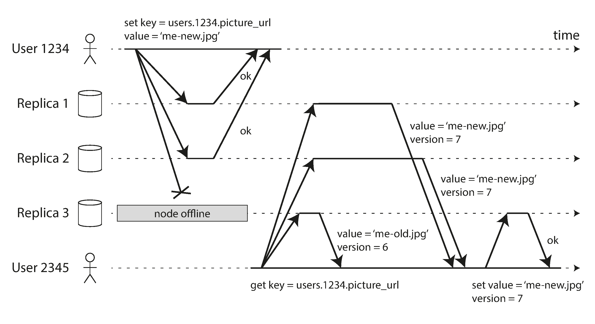
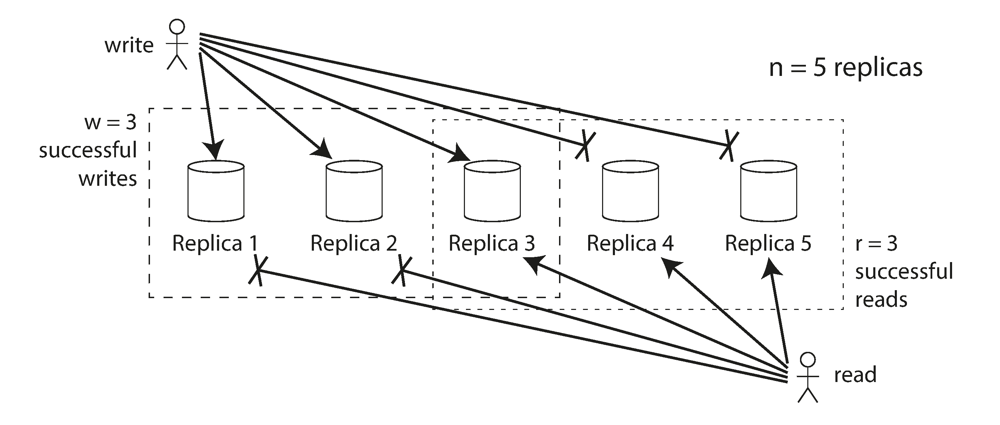

Knowledge Transfer Session • Part II: Distributed Data
"The major difference between a thing that might go wrong and a thing that cannot possibly go wrong is that when a thing that cannot possibly go wrong goes wrong it usually turns out to be impossible to get at or repair."
— Douglas Adams, Mostly Harmless (1992)
In distributed data systems, everything that can go wrong eventually will go wrong: networks partition, disks fill up, clocks drift, leaders crash, and human operators make mistakes. Replication is our primary defense—and our biggest source of architectural complexity.
Why Replicate Data?
Replication means keeping a copy of the same data on multiple machines connected via a network.
🌍 High Availability — Allow the system to continue functioning seamlessly even if several underlying nodes or entire datacenters fail.
⚡ Reduced Latency — Keep data geographically close to end users across the globe to eliminate cross-continent speed-of-light delays.
📈 Read Scalability — Scale out the volume of read-only queries by distributing requests across dozens or hundreds of replica machines.
The Fundamental Problem: Handling Changes
🧊 Static Replicated Data
If your data never changes over time, replication is completely trivial:
Copy the files to every node once
All nodes remain identical forever
Zero coordination or consensus required
🔥 Dynamic Changing Data
All of the difficulty in replication lies in handling changes:
In what order should updates be processed?
What happens if a node is offline during a write?
How do we resolve concurrent conflicting updates?
💡 Chapter Assumption: We assume throughout Chapter 5 that the dataset is small enough that each machine holds a copy of the entire dataset. In Chapter 6, we relax this assumption and introduce partitioning (sharding) for datasets larger than a single machine.
Replication Through History
Replication is an old, deeply studied topic in computer science:
Studied since the 1970s: The fundamental principles haven't changed since early papers (e.g. Bruce Lindsay et al., IBM Research, 1979) because the physical constraints of computer networks remain the same.
The Single-Node Assumption: For decades outside of academic research, mainstream software engineering assumed a database was a single monolith machine.
The Distributed Reality: Modern scale forced distributed databases into mainstream production, catching many developers off guard.
⚠️ The "Eventual Consistency" Myth
The term eventual consistency was coined by Douglas Terry et al. (1994) and popularized by Werner Vogels (2008). It became the marketing battle cry of NoSQL databases.
"However, not only NoSQL databases are eventually consistent: followers in an asynchronously replicated relational database have the exact same characteristics!"
Roadmap: Three Replication Archetypes
Almost all distributed databases choose one of three fundamental algorithms to replicate changes:
1. Single-Leader
Active/Passive (Master–Slave)
All writes funnel through one designated leader. Followers replicate its change stream. Reads go to any node.
PostgreSQL, MySQL, Oracle, MongoDB, Kafka
2. Multi-Leader
Active/Active (Master–Master)
Multiple nodes accept writes. Leaders replicate changes to one another. Essential for multi-datacenter and offline sync.
CouchDB, Tungsten, PostgreSQL BDR, GoldenGate
3. Leaderless
Dynamo-Style Quorums
Any replica accepts writes directly from clients. Quorums (w + r > n) guarantee overlap. Replicas self-heal.
Amazon Dynamo, Apache Cassandra, Riak, Voldemort
Leaders and Followers
Single-leader replication: the classic foundation of distributed databases
Leader-Based (Master–Slave) Architecture
How the most common replication algorithm works:
Leader (Master / Primary) — One replica is designated the leader. When clients write to the database, they must send requests to the leader, which writes first to local disk storage.
Followers (Read Replicas / Slaves / Secondaries) — The leader streams all data changes across the network as a replication log or change stream. Each follower applies writes in the exact same order.
Read Queries — Clients can query either the leader or any follower. Followers are strictly read-only from the client's point of view.

Ubiquity & Standby Terminology
Leader-based replication is everywhere in modern infrastructure:
Relational DBs: PostgreSQL (built-in streaming since 9.0), MySQL, Oracle Data Guard, SQL Server AlwaysOn Availability Groups.
• Hot Standby: Processes the replication log AND actively serves client read queries (e.g. PostgreSQL hot standby).
• Warm Standby: Applies changes from the leader but serves NO client queries (waiting strictly for failover).
• Cold Standby: Inactive backup instance; requires manual restore before becoming operational.
*Note: In partitioned systems (Chapter 6), each partition has exactly one leader, but leaders are distributed across different nodes.
Synchronous vs. Asynchronous Replication
A critical configuration choice with profound behavioral consequences:
Follower 1 is Synchronous: The leader forwards the write and blocks until Follower 1 confirms receipt before returning success to the user and making the write visible to other clients.
Follower 2 is Asynchronous: The leader fires off the replication message over the network and returns immediately, without waiting for Follower 2's confirmation.
Replication Lag: Normally, changes arrive in less than a second. But if a follower is recovering, overloaded, or network-congested, lag easily stretches to minutes.

The Synchronous Dilemma
🛡️ The Synchronous Advantage
Guaranteed Up-to-Date Consistency:
Follower is guaranteed to have an exact, up-to-date copy consistent with the leader.
If the leader suddenly dies, zero data is lost.
Durability expectations are fully satisfied.
💀 The Synchronous Fatal Flaw
Single Node Crash Blocks All Writes:
If the synchronous follower crashes, undergoes maintenance, or experiences a network hiccup, the leader cannot complete any writes!
The entire database grinds to a complete halt until the synchronous replica responds.
Impracticable for All Followers to Be Synchronous
If you had 5 synchronous followers, any one node outage would take down the entire system. System availability = pN.
The Practical Compromise: Semi-Synchronous
In real-world production databases, enabling "synchronous replication" almost always means semi-synchronous replication (e.g. MySQL, Facebook architecture):
How Semi-Synchronous Works
Exactly one follower is configured to be synchronous.
All other followers remain strictly asynchronous.
If the synchronous follower crashes or becomes slow, the leader automatically promotes one of the asynchronous followers to become synchronous!
The Guarantee
Guarantees you always have an up-to-date copy of every committed transaction on at least two nodes: the leader and one synchronous follower.
Prevents the write pipeline from freezing while safeguarding data durability against single-node failures!
Fully Asynchronous: The Durability Trade-off
Often, leader-based replication is configured to be completely asynchronous:
✅ High Availability & Performance
Leader continues processing writes at maximum speed without waiting for network ACKs.
Writes proceed unhindered even if all followers are completely unreachable or lagging by hours.
Essential when followers are geographically dispersed across continents.
⚠️ Weakened Durability Guarantee
If the leader fails catastrophically and cannot recover, any writes not yet replicated to followers are permanently lost!
The client received a "success" confirmation, yet the write was not durable.
A very common trade-off in scalable internet architectures.
"Weakening durability may sound like a bad trade-off, but asynchronous replication is nevertheless widely used, especially if there are many followers or if they are geographically distributed."
Research Spotlight: Chain Replication & Consensus
Because losing committed data in asynchronous systems is serious, researchers developed novel replication algorithms providing both strong consistency and high availability:
⛓️ Chain Replication
Proposed by Robbert van Renesse & Fred Schneider (2004), extended by CRAQ (Object Storage on CRAQ, Terrace & Freedman, 2009).
Nodes arranged in a linear pipeline (Head → Middle nodes → Tail).
Writes enter at the Head, flow down the chain, committed at the Tail.
Reads served by Tail (or clean reads from any node in CRAQ).
Provides linearizability with high throughput. Implemented in Microsoft Azure Storage.
🗳️ Connection to Consensus
There is an intimate mathematical connection between replication consistency and distributed consensus (getting multiple nodes to agree on values despite faults).
We will explore consensus theory, Raft, Paxos, and Zab in depth in Chapter 9. For now, we examine the practical leader-follower mechanisms used in daily database administration.
Setting Up New Followers: The Problem
From time to time, you need to spin up new followers: to increase read capacity, rebalance load, or replace dead nodes. How do you guarantee the new follower gets an exact, consistent replica?
❌ Naive File Copy Fails
Clients are constantly writing to the leader. Disk pages are in constant flux. A raw file copy (`cp` or `rsync`) sees different parts of the database at different points in time.
The resulting database files on the follower will be corrupted and make no sense!
❌ Locking the Database Fails
You could make disk files temporarily consistent by acquiring a global write lock on the leader database during the copy.
However, locking the master halts all writes, completely defeating our core operational requirement of high availability!
Zero-Downtime Follower Setup: 4 Steps
Fortunately, modern database engines permit non-blocking follower provisioning:
1. Consistent Snapshot
Take a consistent snapshot of the leader's database without taking a global write lock (e.g., using multi-version concurrency control or tools like innobackupex for MySQL).
2. Copy Snapshot
Transfer the database snapshot across the network to the target new follower node.
3. Connect & Request Stream
The snapshot must be tagged with an exact log position:
The follower connects to the leader and requests all changes that occurred since that snapshot position.
4. Catch Up & Live Sync
Once the follower processes the backlog of changes, it has caught up and begins consuming live data changes in real time.
Handling Node Outages: Follower Failure
Any node can go down unexpectedly (hardware failure, crash) or for planned maintenance (kernel security patches, OS upgrades). Being able to reboot individual nodes without downtime is crucial.
Follower Failure: Catch-up Recovery
On local disk, each follower maintains a persistent log of the changes it has received from the leader. If a follower crashes or experiences network disconnection:
It reads its log to identify the last transaction processed before the interruption.
It reconnects to the leader and requests all transactions that occurred during its disconnection.
It applies the delta until caught up, then resumes listening to the change stream.
Operational Benefit
Follower recovery is simple and routine. Individual followers can be rebooted, patched, or replaced one by one in a rolling upgrade without affecting write traffic or cluster health.
Handling Node Outages: Leader Failover
Handling a failure of the leader is drastically more difficult: one follower must be promoted to leader, clients rerouted, and followers reconfigured. This is called failover.
1. Failure Detection
There is no foolproof way to distinguish a crash from network delay. Nodes bounce heartbeat messages. If a node fails to respond for a timeout period (e.g., 30s), it is declared dead.
2. Leader Election
A new leader is chosen via majority election (consensus) or appointed by a controller node. The best candidate is the replica with the most up-to-date data changes to minimize data loss.
3. Reconfiguration
Clients must be redirected to write to the new leader. If the former leader recovers, the system must force it to step down, realize it was deposed, and become a follower.
Failover Danger 1: Discarded Writes
In asynchronous replication, the promoted follower may not have received all writes from the old leader before it died.
Meanwhile, the new leader starts accepting brand new client writes.
When the former leader reconnects, what should happen to its unreplicated writes?
The Standard Solution: The old leader's unreplicated writes are simply discarded!
Durability Violation: The client was told the write was successful, but the data is erased!
Why Discarding Writes Is Dangerous
Discarding writes violates the core promise of persistence. If clients update banking records or order items and receive an OK response, finding those writes silently erased breaks business integrity.
This becomes catastrophically dangerous when outside storage systems are coordinated with the database.
Failover Danger 2: The GitHub Incident
A classic real-world disaster illustrating the ripple effect of discarded writes (GitHub Availability Incident, Sept 2012):
What Happened
An out-of-date MySQL follower was promoted to leader following an outage.
MySQL used an autoincrementing counter to assign primary keys to new rows.
Because the new leader's counter lagged behind the old leader's, it began reusing primary keys that had previously been assigned!
These primary keys were also stored in a separate Redis cache.
The Catastrophic Result
🚨 Inconsistency Between MySQL and Redis Caused Private User Data to Be Disclosed to the Wrong Users!
A user requested their private repository or profile, but because primary keys were recycled, Redis served another user's cached private data!
Failover Danger 3: Split Brain & STONITH
In network partitions, two nodes can both believe they are the legitimate leader:
Split Brain: If both nodes accept writes independently without conflict resolution, data is rapidly corrupted or lost.
Fencing / STONITH:"Shoot The Other Node In The Head" — nodes use hardware fencing (IPMI power off) to forcefully kill a rogue leader.
The STONITH Failure Mode: If fencing logic is misconfigured or network flaps cause both nodes to suspect each other, both nodes shoot each other down, killing the entire cluster!
Failover Danger 4: The Timeout Dilemma
Timeout Too Long (e.g. 5 minutes)
System sits idle and unavailable for 5 minutes during a real crash before recovering. SLA is severely impacted.
If the system is already struggling with overload, failover overhead makes the crisis vastly worse!
"There are no easy solutions to these problems. For this reason, some operations teams prefer to perform failovers manually, even if the software supports automatic failover."
Implementation of Replication Logs
Under the hood: from raw statements and disk bytes to logical change streams
Method 1: Statement-Based Replication
In the simplest conceptual model, the leader logs every write request (statement) that it executes and sends that statement log to its followers:
How It Works
For a relational database, every SQL statement (`INSERT`, `UPDATE`, `DELETE`) is forwarded directly over the network to followers.
Each follower parses and executes that SQL statement as if it had been received directly from an application client.
Initial Appeal & Usage
Extremely Compact: Only the concise SQL text is sent across the wire (e.g. `UPDATE users SET status = 'active' WHERE id = 42;`).
History: Used in MySQL prior to version 5.1.
Today: VoltDB requires statement-based replication, making it completely safe by strictly requiring all transactions to be deterministic.
Why Statement-Based Replication Breaks Down
Although simple, statement-based replication is notoriously brittle due to three critical failure modes:
1. Nondeterminism
Any statement calling nondeterministic functions like `NOW()`, `RAND()`, or `UUID()` produces different values on every replica, silently corrupting consistency.
2. Autoincrement & Order
Statements using autoincrementing columns or conditional updates (`UPDATE ... WHERE condition`) must execute in identical order on all replicas, severely restricting concurrency.
3. Side Effects
Triggers, stored procedures, and user-defined functions that read system state or invoke external services yield different side effects on each node.
💡 Workarounds: The leader can substitute fixed return values for `NOW()`, but edge cases are so plentiful that modern databases prefer row-based replication.
Method 2: Write-Ahead Log (WAL) Shipping
Recall from Chapter 3 that storage engines represent data on disk by appending writes to an append-only byte log:
Log-Structured (SSTables & LSM-Trees): The log is the primary storage structure; segments are compacted in the background.
B-Trees: Every block modification is first recorded in a write-ahead log (WAL) to restore page consistency after crashes.
WAL Shipping: Besides writing to local disk, the leader sends this exact append-only byte log across the network.
Follower: Processes this byte log to build an exact, identical disk image of the leader's data structures!
Used by:PostgreSQLOracle Data Guard
The Operational Trap of WAL Shipping
Low-Level Physical Coupling
A Write-Ahead Log contains details of which bytes were changed in which disk blocks.
This binds replication tightly to the storage engine's low-level binary disk representation!
💀 Major Version Upgrades Require Downtime
If a database changes its on-disk storage format from one major version to another, the leader and followers cannot run different software versions!
You cannot perform a zero-downtime rolling upgrade (upgrading followers first, then failing over). Major PostgreSQL upgrades with WAL shipping traditionally required maintenance downtime!
Method 3: Logical (Row-Based) Log Replication
Use different log formats for replication and for storage engine internals, decoupling replication from physical disk layouts:
Row-Level Granularity
A logical log describes table writes at the granularity of a row:
INSERT: Contains the new values of all columns.
DELETE: Contains the primary key (or old values of all columns if no primary key exists).
UPDATE: Contains the primary key and the new values of all changed columns.
Transactions: Multi-row modifications emit multiple row records followed by a commit marker.
Real-World Standard
MySQL binlog: When configured for row-based replication (RBR), MySQL logs row-level deltas rather than raw SQL text.
This represents the modern sweet spot between compatibility, safety, and performance for relational systems!
Superpowers of Logical Logs: Upgrades & CDC
🔄 Zero-Downtime Rolling Upgrades
Because the logical log is decoupled from storage engine byte layouts, it remains backward compatible across database software versions:
Followers can run a newer software version than the leader.
Upgrade followers one by one while cluster remains live.
Perform a clean failover to an upgraded node, making it leader.
Upgrade the old leader with zero downtime!
📡 Change Data Capture (CDC)
A logical log format is straightforward for external applications and stream processors to parse:
Stream database changes to data warehouses (e.g. Snowflake, BigQuery) for offline OLAP analytics.
Continuously build and refresh custom external search indexes (Elasticsearch, Solr).
Invalidate and populate Redis/Memcached caches in real time. (Chapter 11 deep dive!)
Method 4: Trigger-Based Replication
When built-in database replication is not flexible enough, replication moves up into the application layer:
How Triggers Work
Register database triggers and stored procedures that fire automatically when write transactions occur.
The trigger logs data modifications into a separate audit/delta table.
An external process (daemon) reads the delta table, executes custom application logic, and replicates changes to other databases.
Why use it: Replicating only a subset of data, replicating between heterogeneous database engines, or applying custom business conflict logic.
⚠️ The Cost: Substantially higher CPU/storage overhead than built-in replication.
⚠️ The Danger: Prone to subtle application bugs, transaction aborts, and maintenance quirks.
Replication Log Implementations Comparison
Method
Granularity
Storage Coupling
Zero-Downtime Upgrades
CDC & External Tooling
Statement-Based
SQL Statements (`INSERT`, `UPDATE`)
Decoupled
Yes (with caution)
Hard (requires SQL parsing)
WAL Shipping
Physical bytes in disk blocks
Tightly Coupled
❌ No (requires exact match)
❌ Extremely difficult (binary format)
Logical (Row)
Row-level changes (`BEFORE`/`AFTER`)
Decoupled
✅ Yes (smooth rolling)
✅ Excellent (industry standard)
Trigger-Based
Application-defined rows
Decoupled (App layer)
Yes (custom code)
Flexible, but high overhead
Logical (row-based) replication has become the gold standard for modern scalable databases.
Part 4 of 8
Problems with Replication Lag
Concurrency, asynchrony, and the dangerous illusions of "eventual consistency"
The Read-Scaling Architecture & Inevitability of Lag
Why horizontal read scaling fundamentally forces distributed systems into asynchronous trade-offs.
📈 The Read-Scaling Promise
Most web workloads are heavily read-dominated (e.g., 99% reads, 1% writes). Leader-based replication allows read queries to be distributed across dozens of followers, freeing the leader to process writes and placing read replicas close to global users.
⚠️ The Synchronous Impossibility:
Read-scaling only works with asynchronous replication. If you made 20 followers synchronous, a single slow disk, garbage collection pause, or network hiccup would freeze all writes globally. Availability collapses exponentially (pN).
⏳ The Inevitable Consequence: Lag
Outdated Data: Reading from an asynchronous follower may return stale data that does not reflect recent writes.
Temporary Inconsistency: Running the exact same query on leader and follower simultaneously can return contradicting results.
Eventual Convergence: If writes stop completely, followers will eventually process all log entries and match the leader.
Hence: Known as eventual consistency (Douglas Terry et al., Werner Vogels).
💡 The Developer Trap: Systems operate smoothly in testing with 1ms lag. In production under load, lag balloons and shatters naive application assumptions.
The Elusive Meaning of "Eventual"
Why the absence of replication lag bounds transforms theoretical consistency into severe operational bugs.
⏱️
Normal Operation
Lag < 1000 ms
Under normal loads and healthy networks, replication lag is typically a fraction of a second. The delay is practically imperceptible to human users browsing web interfaces.
⚠️
Degraded Operation
Lag: Minutes to Hours
When nodes operate near capacity, disk queues back up, cross-datacenter WAN links become congested, or long compaction/GC runs occur, lag easily balloons to minutes or hours.
🚨
The Spec Trap
Zero Guarantees
"Eventually" is deliberately vague: distributed replication protocols provide no theoretical upper bound on when a replica must catch up. Stale reads can persist indefinitely.
Three Critical Replication Lag Anomalies:
When lag is non-trivial, three distinct user-facing consistency bugs emerge:
(1) Reading Your Own Writes (data vanishes post-submit),
(2) Monotonic Reads (time jumps backward upon reload), and
(3) Consistent Prefix Reads (causality violated: answers appear before questions).
Lag Anomaly 1
Reading Your Own Writes
A user submits a profile change or comment, which successfully commits on the leader.
The User Experience Disaster:
The user immediately reloads the webpage. Their read query is routed to a stale follower that has not yet processed the replication stream. The data they just entered is completely missing!
To the user, it looks like their submit failed or data was lost permanently.
They resubmit repeatedly, generating duplicate records and wasting server resources.
This occurs constantly in asynchronous architectures where reads and writes use distinct replica targets.

Figure 5-3: User makes a write to the leader, then reads from a lagging follower. To the user, data appears lost.
Read-After-Write Consistency
Also known as read-your-writes consistency: reassuring users that their actions were saved.
🔒 The Formal Guarantee
If a user submits an update and then reloads or accesses that data, they are guaranteed to see their own submitted updates.
Crucial Distinction — Scope of the Guarantee:
Read-after-write makes no promises about other users' writes! Updates submitted by other users may remain invisible until followers catch up. It solely reassures the active user that their own input was committed.
🎯 Where Is This Vital?
User Profiles: Editing bio, email, or password — must immediately reflect on profile reload.
E-Commerce Carts: Adding an item to the shopping cart; viewing the cart must display the newly added item.
Social Media Posts & Comments: Posting a status or comment; refreshing the feed must show the submitted post.
Financial Transactions: Submitting a payment or funds transfer; balance or pending list must update immediately.
Implementing Read-After-Write Consistency
Four proven engineering techniques in leader-based replication architectures.
1
Read Modifiable Data from Leader
If reading data that only the current user could have modified, always read from the leader. (E.g., user's own profile page is read from leader; other users' public profiles are read from followers).
⚠️ Fails if most data is editable by many users (e.g. collaborative wiki), as reading everything from the leader negates read-scaling.
2
Time-Decay Leader Read Threshold
Track the timestamp of the user's last write. For one minute after a write, route all user reads to the leader. After 1 minute, revert reads to followers.
💡 Also monitor follower lag: actively reject read queries on any follower that is more than one minute behind the leader!
3
Client Write Timestamps / LSN
Client remembers the timestamp or Log Sequence Number (LSN) of its latest write. Follower serving the read must be caught up at least to that LSN.
🔄 If follower is behind, either redirect query to an up-to-date replica or pause the read until follower catches up.
4
Cross-Datacenter Leader Routing
When replicas are distributed across multiple datacenters for global proximity, any read that must hit the leader requires routing requests across WAN to the leader's home datacenter.
🌐 Adds cross-region latency, but guarantees absolute freshness for critical user updates.
The Cross-Device Consistency Challenge
What happens when the same user accesses your service across a smartphone and desktop?
📱 The Scenario
A user enters an address or credit card on their desktop browser, then immediately checks the mobile app on their phone 5 seconds later. Cross-device read-after-write consistency requires that their phone sees the desktop's update instantly.
❌ Why Client Timestamps Fail
Approaches that rely on the client remembering its last write timestamp fail because the phone's code has no shared memory with the desktop browser.
Solution: The update timestamp / LSN metadata must be stored centrally in a fast key-value store (e.g. Redis) indexed by user ID.
🌐 Network & Datacenter Asymmetry
Devices often connect through completely different networks:
Desktop: Home broadband / fiber connection routed to Datacenter A.
Mobile Phone: Cellular carrier 5G/LTE network routed to Datacenter B.
Replicas in Datacenter B may lag significantly behind Datacenter A.
Requirement: If an approach requires reading from the leader, the system must first route connections from all of a user's devices to the same datacenter!
Lag Anomaly 2
Monotonic Reads: Time Moving Backward
What happens when an observer reads from two different replicas with different replication lags?
The Backward-in-Time Illusion:
1. User 1234 posts a comment.
2. User 2345 visits the thread; routed to Follower 1 (low lag) → sees the comment!
3. User 2345 refreshes the browser; round-robin routes them to Follower 2 (high lag) → the comment has vanished!
To the user, it feels like the system traveled backward in time. It is disorienting and breaks application trust.
Figure 5-4: User first reads from a fresh replica, then from a stale replica. Time appears to go backward.
The Monotonic Reads Guarantee
Ensuring that subsequent reads by a user never observe an earlier system state.
📊 Formal Definition
Monotonic reads guarantees that if a user makes several reads in sequence, they will never see time go backward.
They may read an older value initially, but having once observed a state, they will never subsequently observe an older state.
The standard approach is to ensure that each user always issues their queries to the same replica:
replica = hash(user_id) % num_followers;
Different users read from different followers (preserving horizontal scale), but an individual user moves strictly forward in time.
Failover Edge Case: If that designated follower crashes, the user's queries must be rerouted to another replica, which might lag behind! Routing must ensure the new replica is at least as fresh.
Lag Anomaly 3
Consistent Prefix Reads & Causality
Violations of causal order when reads observe writes out of sequence.
The Causal Reality:Mr. Poons: "How far into the future can you see, Mrs. Cake?"
Mrs. Cake: "About ten seconds usually, Mr. Poons."
What an Out-of-Order Observer Sees:
Mrs. Cake: "About ten seconds usually, Mr. Poons."
Mr. Poons: "How far into the future can you see, Mrs. Cake?"
🔮 Mrs. Cake appears to answer the question before Mr. Poons has even asked it!
There was a direct causal dependency between question and answer, but replication lag inverted their order to third-party observers.

Figure 5-5: If some partitions replicate slower than others, an observer may see the answer before the question.
Causality in Partitioned Databases & Solutions
Why consistent prefix reads is especially challenging in sharded and distributed architectures.
🧩 The Partitioning Problem
In a single-leader database with a global log, writes are applied in a single total order, so reads naturally see a consistent prefix.
However, in partitioned (sharded) databases (detailed in Chapter 6), different partitions operate independently:
Partition 1 (holding Mr. Poons's question) might experience 5 seconds of network lag.
Partition 2 (holding Mrs. Cake's answer) replicates instantaneously with 10 ms lag.
There is no global write ordering across independent partitions.
🛠️ Engineering Solutions
1. Causal Partition Co-location:
Ensure any writes that are causally related are routed to the same partition (e.g. key by chat channel ID or thread ID instead of user ID).
2. Explicit Causal Tracking Algorithms:
Use algorithms that explicitly track causal dependencies with vector timestamps and version graphs, forcing followers to hold off exposing dependent writes until parents arrive.
Solutions for Replication Lag: Why Transactions Exist
Application-level duct tape vs. principled database-level consistency guarantees.
The Application-Layer Trap:
Handling read-after-write, monotonic reads, and consistent prefix reads entirely in application code is extraordinarily complex and error-prone. When replication lag spikes from 100ms to 45 minutes during an incident, brittle application logic collapses.
"Pretending that replication is synchronous when in fact it is asynchronous is a recipe for problems down the line."
— Martin Kleppmann, DDIA Chapter 5
🏛️ Why Transactions Were Invented
Developers shouldn't have to write hundreds of lines of fragile routing logic. Transactions exist so that the database provides rigorous safety guarantees, allowing application code to remain simple and correct.
The NoSQL Myth: Early distributed systems claimed transactions were "too expensive" for scalability, asserting eventual consistency was mandatory. Kleppmann demonstrates this view is overly simplistic. (Revisited thoroughly in Chapters 7 & 9).
⏱️ Replication Lag Anomaly Lab
Leader Ready
Follower 1 lag: 1s
Follower 2 lag: 5s
Click Step ▶ to begin
💡 Based on Ch5 "Problems with Replication Lag". Three anomalies that occur when reading from asynchronous followers. Toggle the fix to see how each guarantee resolves it.
Part 5 of 8
Multi-Leader Replication
Active-active architectures, write scalability, and the hazardous realities of concurrent conflicts
Why Multi-Leader? Breaking the Single-Write Bottleneck
Overcoming the single point of failure in traditional leader-follower replication.
🛑 The Single-Leader Achilles' Heel
In single-leader systems, exactly one node accepts writes. If a client cannot reach the leader due to a network partition, datacenter outage, or node crash, all writes across the entire application grind to a halt.
Writes are limited by the I/O throughput and geographic location of a single machine.
🌐 The Multi-Leader Alternative
Also known as master-master or active/active replication. Multiple nodes concurrently accept client writes!
Every node processing writes forwards data changes to all other leaders.
Each leader acts simultaneously as a follower to all other leaders.
Operational Rule: It rarely makes sense within a single datacenter (complexity outweighs benefit), but is transformative in 3 specific use cases.
Use Case 1
Multi-Datacenter Operation
Distributing databases across geographical continents for redundancy and low latency.
Two-Tier Hierarchy:
Within Each Datacenter: Normal single-leader replication. Clients read and write to the local datacenter leader.
Between Datacenters: Leaders replicate their changes to leaders in other datacenters asynchronously.
If an entire datacenter in Europe goes offline, the US datacenter continues processing local writes without interruption.

Figure 5-6: Multi-leader replication across multiple datacenters with conflict resolution.
Single-Leader vs. Multi-Leader in Multi-DC
Architectural trade-off matrix across latency, outages, and network unreliability.
Dimension
Single-Leader Configuration
Multi-Leader Configuration
Performance & Latency
Every write must cross the internet to the leader's DC. High latency (100–300ms) perceived by remote users.
Writes processed locally in nearby DC at LAN speed (<5ms). Inter-DC network delay is completely hidden.
Tolerance of DC Outages
If leader's DC fails, complex failover must promote a follower in another DC to leader. Outage during transition.
Each DC operates fully independently. Surviving DCs continue writes. Failed DC catches up upon recovery.
Highly resilient: inter-DC replication is asynchronous; temporary link partitions do not block local writes.
Industry Implementations:Tungsten Replicator (MySQL)BDR (PostgreSQL)GoldenGate (Oracle)
Multi-Leader Pitfalls: "Dangerous Territory"
Why Martin Kleppmann cautions that multi-leader replication should often be avoided.
The Retrofitted Nature of Multi-Leader:
In most relational databases, multi-leader replication is an afterthought retrofitted via external tools or plugins. It produces surprising and catastrophic edge cases with core database features.
"As multi-leader replication is a somewhat retrofitted feature in many databases... multi-leader replication is often considered dangerous territory that should be avoided if possible."
— DDIA Chapter 5, p. 170
💥 Subtle Feature Interactions
Autoincrementing Keys: If two leaders independently assign sequential IDs, they generate colliding primary keys unless configured with distinct offsets/steps.
Triggers & Stored Procedures: Side-effects may fire multiple times or execute against unexpected intermediate states.
Integrity Constraints: Concurrently inserting rows with identical unique keys (e.g. email) succeeds on both leaders, producing fatal replication collisions later.
Schema Migrations (DDL): Running non-blocking DDL across asynchronous multi-leader nodes frequently corrupts data streams.
Use Case 2
Clients with Offline Operation
Every disconnected device is architecturally a tiny single-node datacenter.
📱 The Mobile Calendar Analogy:
You need to view meetings (reads) and add appointments (writes) on your phone, laptop, or tablet while in airplane mode with no internet.
Each device has a local database that acts as a leader (accepting writes).
When online, an asynchronous multi-leader sync replicates changes across devices.
Replication lag can be hours, days, or weeks!
💡 CouchDB was designed from scratch for this offline-first replication model.
Smartphones and laptops act as local leader replicas syncing asynchronously across unreliable links.
Use Case 3
Real-Time Collaborative Editing
Treating collaborative web applications as distributed database replicas.
Locking (Single-Leader)
Lock entire document for User 1. User 2 must wait until User 1 commits and releases. Clunky, sluggish collaboration.
Granular (Multi-Leader)
Unit of change is a single keystroke! Changes apply locally to browser replica instantly, replicated async.
Powers tools like Google Docs and Etherpad. Eliminates locks, but requires specialized automated conflict resolution algorithms (Operational Transformation).
The biggest and most complex problem in multi-leader replication
The Write Conflict Problem
What happens when two users concurrently modify the exact same record on different leaders?
Initial wiki page title: "A"
User 1 (Leader 1): changes title from A to B ✅ (commits!)
User 2 (Leader 2): changes title from A to C ✅ (commits!)
The Asynchronous Collision:
Both writes succeeded locally. But when replicated, Leader 1 sees C arriving after B, while Leader 2 sees B arriving after C! Without conflict resolution, replicas permanently diverge!
In single-leader databases, the second write blocks or aborts. In multi-leader, both writes have already committed locally before the conflict is noticed.
Figure 5-7: A write conflict caused by two leaders concurrently updating the same record.
Synchronous vs. Asynchronous Conflict Detection
Why synchronous conflict detection completely defeats the purpose of multi-leader replication.
🤔 Could We Detect Conflicts Synchronously?
In theory, a leader could pause the client and wait for the write to replicate to all other leaders before acknowledging success to the user.
The Fatal Flaw: If you wait for all replicas synchronously, you lose the primary advantage of multi-leader replication: allowing each node to accept writes independently during outages!
If you are willing to block on all replicas, you might as well just use a single-leader database.
⚡ Asynchronous Conflict Reality
Because writes must be fast and autonomous, multi-leader replication detects conflicts asynchronously.
Both writes are acknowledged to clients as successful.
The conflict is discovered seconds, minutes, or hours later during replication.
At that point, it is far too late to prompt the user or rollback cleanly!
The database must resolve the conflict automatically.
Conflict Avoidance: The Pragmatic Standard
The simplest and most frequently recommended strategy for dealing with multi-leader conflicts.
🛡️ The Principle of Avoidance
If the application can ensure that all writes for a particular record go through the same leader, conflicts can never occur!
Example: Home Datacenter: In a user-centric app, route all requests from a given user to their geographical "home" datacenter. From that user's perspective, the system behaves as single-leader!
⚠️ When Conflict Avoidance Breaks Down
In practice, designated leaders must occasionally be changed:
Datacenter Outage: Home DC fails; traffic is rerouted to a secondary DC.
User Mobility: A user travels to another continent, connecting to a closer DC.
When rerouting happens, concurrent writes may hit different leaders simultaneously, completely breaking conflict avoidance.
Converging Toward a Consistent State
All replicas must arrive at the same final value when all changes have replicated.
1
Last Write Wins (LWW)
Attach a timestamp or UUID to each write; pick highest timestamp as winner, discard others.
⚠️ Highly popular, but dangerously prone to silent data loss due to clock skew!
2
Replica Priority Precedence
Assign each replica a unique integer ID. Writes originating at higher-numbered replicas override lower ones.
⚠️ Deterministic convergence, but also causes arbitrary, silent data loss.
3
Value Merging
Merge conflicting values together (e.g. order alphabetically and concatenate strings into "B/C").
🔄 Retains all data, but resulting concatenated value may violate schema constraints.
4
Explicit Conflict Recording
Store conflict metadata explicitly in a data structure that preserves all competing writes (siblings).
✅ Safest approach: delegates resolution to application code or user prompts later.
Custom Conflict Resolution: On-Write vs. On-Read
Executing application code to determine how conflicting records are reconciled.
✍️ Executing On Write
As soon as the database detects a conflict in the replication log stream, it immediately invokes a registered handler.
Example: Bucardo for PostgreSQL allows writing a snippet of Perl to reconcile conflicting changes.
Constraint: Runs in a background process; cannot prompt a human user; must execute extremely quickly.
📖 Executing On Read
When a conflict occurs, all competing versions are stored without modification (as "conflicts" or "siblings").
Example: CouchDB stores conflicting document versions. Next time the doc is read, all versions are returned to the client.
Flexibility: Application code can prompt the user (e.g. Git merge UI) or apply domain logic, then write the resolved record back.
Row-Level Granularity Caveat: Conflict resolution applies to an individual row or document, not an entire transaction. If a transaction updated 5 tables atomically, each row is resolved independently!
Automatic Conflict Resolution & Research Frontiers
The pitfalls of custom code and the mathematical breakthroughs eliminating manual conflict handlers.
🛒 The Classic Amazon Shopping Cart Bug:
Amazon's early custom conflict handler preserved added items across conflicts, but failed to track item deletions properly. Customers would delete an item, but upon concurrent cart sync, the deleted item would mysteriously reappear!
CRDTs
Conflict-Free Replicated Data Types
Mathematical data structures (sets, maps, counters) that can be concurrently modified by multiple replicas and converge automatically without coordination (e.g., Riak 2.0).
Mergeable Data Structures
Persistent Git-Like Histories
Explicitly track change history DAGs (like Git commits) and use three-way merge algorithms with common ancestors to cleanly combine concurrent branch histories.
Operational Transform (OT)
Sequence Re-indexing
The algorithmic engine powering Google Docs and Etherpad. Specifically designed for concurrent edits to ordered sequences of characters in rich-text documents.
What Is a Conflict? Obvious vs. Subtle Semantics
Why real-world distributed conflicts extend far beyond simple record overwrites.
📝 Obvious Conflicts (Direct Overwrite)
Two concurrent writes update the same column of the same primary key row to conflicting values (e.g., user bio = "Hello" vs. "Hi").
Simple to detect: the replication engine observes conflicting timestamps or version numbers for the exact same key.
🏢 Subtle Semantic Conflicts: The Meeting Room Trap
Imagine a room booking app: Room 101 can only be booked by one team at 2:00 PM.
User A queries Leader 1: Room 101 is free at 2 PM → creates booking row #101A.
User B queries Leader 2: Room 101 is free at 2 PM → creates booking row #101B.
The Conflict: No single row was overwritten! Both are distinct rows. Yet a critical business invariant was shattered (double booking). Requires serializable transactions (Chapters 7 & 12).
Part 5: Architecture
Multi-Leader Topologies
Routing write streams across clusters: circular, star, and all-to-all networks
Replication Topologies
A replication topology describes the communication paths along which writes propagate between leaders.
[a] Circular Topology: Each node forwards writes in a ring. Each node receives writes from one peer and forwards them to one other (default in MySQL).
[b] Star Topology: A central designated root node receives and forwards writes to all other leaders (can generalize to tree).
[c] All-to-All Topology: Every leader transmits its writes directly to every other leader. The most densely connected architecture.
Figure 5-8: Three example topologies in which multi-leader replication can be set up.
Loop Prevention & Fault Tolerance in Topologies
Managing infinite replication cycles and single-point-of-failure vulnerabilities.
🔄 The Loop Prevention Mechanism
In circular and star topologies, a write passes through multiple intermediate nodes before reaching all replicas. Without safeguards, writes would circulate forever!
The Identifier Tagging Solution:
Each node is given a unique identifier. In the replication log, each write is tagged with the identifiers of all nodes it has traversed. When a node sees its own ID on an incoming write, it drops the write to prevent infinite loops.
💥 Fault Tolerance Comparison
Circular & Star: Single Point of Failure!
If just one node crashes, it breaks the replication chain! Other nodes are blocked from communicating until the failed node is recovered or manually reconfigured.
All-to-All: Highly Fault Tolerant!
Messages travel along redundant point-to-point links. A single node crash does not prevent the surviving nodes from replicating with each other.
Causality Violations in All-to-All Topologies
Network links operate at different speeds: writes can "overtake" each other in transit!
The Overtaking Disaster:
1. Client A inserts a row on Leader 1.
2. Client B reads that row and updates it on Leader 3.
3. Leader 2 receives the update before the insert!
4. Leader 2 tries to update a row that doesn't exist yet!
Clocks cannot be trusted to resolve this ordering (Chapter 8). We need version vectors.
⚠️ Shocking Vendor Reality: PostgreSQL BDR does not provide causal write ordering, and Tungsten Replicator doesn't even detect conflicts!

Figure 5-9: With multi-leader replication, writes may arrive in the wrong order at some replicas.
Part 6 of 8
Leaderless Replication
The Dynamo paradigm, quorum consensus, and sloppy availability
The Dynamo Philosophy & Historical Roots
Abandoning the leader entirely: allowing any replica to accept client writes directly.
📜 Historical Roots & Revival
Leaderless replication is not new: the earliest distributed database research in the 1970s (Gifford 1979, Thomas 1979) was leaderless. It was largely forgotten during the 25-year dominance of relational databases.
Amazon revived the architecture with its landmark 2007 Dynamo paper, spawning open-source datastores known as Dynamo-style:
Apache CassandraRiakVoldemort
⚙️ Architectural Mechanisms
Direct Client Writes: Client sends writes to multiple replicas in parallel.
Coordinator Routing: Alternatively, a coordinator node sends writes on behalf of the client, but does not enforce write ordering.
Crucial Distinction: Amazon's internal Dynamo KV store is distinct from DynamoDB (AWS hosted service based on single-leader Paxos).
Writing When a Node Is Down
In leaderless replication, failover does not exist!
Outage Walkthrough (3 Replicas):
Replica 3 is down (rebooting for OS patch).
User 1234 sends a write to all 3 replicas in parallel.
Replicas 1 and 2 accept the write; Replica 3 misses it.
2 of 3 acknowledge: write is considered successful! The client simply ignores Replica 3's absence.
When Replica 3 comes back online, clients reading from it risk receiving stale data. Hence, reads must also query multiple nodes in parallel!

Figure 5-10: Quorum write, quorum read, and read repair after a node outage.
Catching Up: Read Repair vs. Anti-Entropy
How a recovering node catches up on writes it missed while offline.
🛠️ Mechanism 1: Read Repair
When a client reads in parallel from multiple nodes, it compares versions:
Client receives Version 7 from Node 1 & Node 2, and Version 6 from Node 3.
Client recognizes Node 3 is stale, and writes Version 7 back to Node 3.
Limitation: Works wonderfully for frequently read keys, but rarely read data never gets repaired!
🔄 Mechanism 2: Anti-Entropy Process
A background daemon continuously compares dataset hashes (Merkle trees) between replicas and copies missing data.
Unlike replication logs, does not copy in any specific order.
Can have significant background delay.
⚠️ Voldemort Risk: Project Voldemort has NO anti-entropy process! Infrequently read data remains stale forever, permanently degrading durability.
Quorums for Reading and Writing
The mathematical foundation of leaderless consistency: the pigeonhole principle in action.
w + r > n
The Fundamental Quorum Condition
📐 The Overlap Principle
If w + r > n, the set of nodes written to and the set of nodes read from must overlap by at least one node! That overlapping node is guaranteed to hold the latest version.
⚙️ Fault Tolerance Parameters
n: Number of replicas storing a key (cluster may have 100 nodes, but key lives on n).
w: Number of successful write acknowledgments required.
r: Number of nodes queried for each read.
Writes tolerate up to n − w unavailable nodes.
Reads tolerate up to n − r unavailable nodes.
Standard majority: n=3, w=2, r=2 (tolerates 1 down node) or n=5, w=3, r=3 (tolerates 2 down nodes).
Visualizing Quorum Overlap
Why the intersection of read and write sets guarantees freshness.
Example: n=5, w=3, r=3
Write confirmed on 3 nodes (e.g. Nodes 1, 2, 3).
Read queries 3 nodes (e.g. Nodes 3, 4, 5).
Node 3 is in both sets: its version number proves it has the latest write!
💡 Workload Tuning:
• Read-heavy: w = n, r = 1 (fast reads, but any node crash stops writes).
• Write-heavy: w = 1, r = n (fast writes, but any node crash stops reads).

Figure 5-11: If w + r > n, at least one of the r replicas you read from must have seen the most recent write.
Why even strict w + r > n configurations frequently return stale values in production.
1. Sloppy Quorums
Writes accepted on non-home nodes; read quorum queries home nodes → no overlap guaranteed!
2. Concurrent Writes
Writes have no defined order. If resolved via LWW timestamps, clock skew silently discards valid data.
3. Concurrent Read & Write
A read occurring concurrently with a write may land on only some updated nodes; result is undetermined.
4. Partial Write Failures
Write succeeds on fewer than w nodes and reports failure. It is never rolled back! Reads may still see it.
5. Node Restore from Old Data
Restoring a node from backup drops the count of nodes holding the new value below w, breaking quorum.
6. Linearizability Glitches
Timing race conditions allow Reader A to see new value, followed by Reader B seeing old value (Chapter 9).
Monitoring Replica Staleness
Why measuring replication lag is vastly harder in leaderless datastores.
📏 Leader-Based: Simple & Deterministic
Because writes are sequentially ordered in a log:
Lag = Leader_LSN - Follower_LSN;
Gives an exact, quantifiable lag in bytes and milliseconds for operational monitoring alerts.
❓ Leaderless: Indeterminate & Complex
There is no fixed write order and no global log position!
Without anti-entropy, infrequently read keys can remain stale for months or years.
Research by Peter Bailis et al. introduced PBS (Probabilistically Bounded Staleness) to predict stale read likelihood.
Standard monitoring tools rarely quantify "eventual consistency" in leaderless clusters.
Sloppy Quorums & Hinted Handoff
What should a cluster do during network partitions when the designated n nodes are unreachable?
Strict Quorum
Reject the write with an error because w home nodes cannot be reached. Consistent, but unavailable.
Sloppy Quorum 🛋️
Accept writes on reachable neighbor nodes outside the home n set! Maximize write availability.
The Couch Analogy: Like sleeping on a neighbor's sofa when locked out of your house. Once you find your keys (partition heals), hinted handoff sends the writes back home.
A temporary resting place for writes when the home nodes are locked out.
Sloppy Quorums: Durability vs. Consistency
Why a sloppy quorum is not a true quorum in the traditional distributed sense.
⚠️ The Consistency Illusion
A sloppy quorum provides assurance of durability only (the data is safely saved on disk on w nodes somewhere).
Zero Read Consistency: There is absolutely no guarantee that a read of r nodes will observe the write until hinted handoff completely finishes! Overlap is severed.
🏢 Implementation Defaults in the Wild
Riak: Sloppy quorums enabled by default. Prioritizes maximum write availability at all costs.
Cassandra: Sloppy quorums disabled by default. Reads and writes strictly require the designated home replicas.
Voldemort: Sloppy quorums disabled by default.
Multi-Datacenter Operation in Leaderless Systems
Architecting Dynamo-style leaderless replication across geographical regions.
🏛️ Cassandra & Voldemort Model
Replicas n span across all datacenters (e.g., n=6: 3 in US, 3 in EU).
Client sends write to all replicas across the globe.
Client only waits for LOCAL_QUORUM (majority of nodes in local DC) to confirm success!
Cross-DC replication proceeds asynchronously over WAN without delaying local user response.
🌐 Riak Cluster-to-Cluster Model
Replicas n are strictly confined to a single datacenter.
All quorum reads and writes remain 100% local to that datacenter's LAN.
Inter-datacenter replication between independent clusters occurs asynchronously in the background.
Behaves identically to multi-leader replication across datacenters.
Part 7 of 8
Detecting Concurrent Writes
The "Happens-Before" relationship, causal dependency DAGs, tombstones, and version vectors
The Concurrent Writes Problem
In leaderless datastores, clients write to the same key simultaneously without coordination.
The Anomaly (Figure 5-12):
Node 1: Receives only Write A (network drop blocks Write B). Value = A.
Node 2: Receives Write A first, then Write B. Value = B.
Node 3: Receives Write B first, then Write A. Value = A.
Permanent Inconsistency: If nodes naively overwrite on arrival, Node 2 believes X=B while Nodes 1 & 3 believe X=A! A subsequent read returns conflicting answers forever.
Figure 5-12: Concurrent writes in a Dynamo-style datastore: there is no well-defined ordering.
Last Write Wins (LWW): Seductive, Popular, Dangerous
Achieving eventual convergence at the direct expense of data durability.
⚙️ The LWW Premise
Attach a timestamp (or UUID) to every write. The write with the highest timestamp wins; older writes are discarded.
Forces an arbitrary total order on concurrent writes.
Guarantees all replicas eventually converge to the same value.
The only supported conflict resolution method in Apache Cassandra; optional in Riak.
🚨 The Hidden Data Loss Catastrophe
LWW achieves convergence by silently destroying data!
Writes reported as successfully committed to clients (w acks) are discarded without warning.
Due to clock skew (Chapter 8), a causally later write can have an earlier timestamp and be dropped!
💡 The Only Safe Use of LWW: Treat records as strictly immutable! Generate a unique UUID for every write so keys are never updated concurrently.
The "Happens-Before" Relationship
Defining concurrency rigorously: it is about causal dependency, not physical wall-clock time!
🧩 The 3 Possibilities for Operations A & B
1. A Happens Before B (A → B):
Operation B knows about A, depends on A, or builds upon A. B supersedes A and safely overwrites it.
2. B Happens Before A (B → A):
Operation A knows about B and builds upon it. A supersedes B and safely overwrites it.
3. A and B are Concurrent (A || B):
Neither operation knows about the other! There is a true conflict that must be merged or resolved.
💡 The Definition of Concurrency
"We simply call two operations concurrent if they are both unaware of each other, regardless of the physical time at which they occurred."
— Martin Kleppmann, DDIA Chapter 5
Two writes may occur hours apart on different continents: if network partitions prevented them from exchanging data, they remain concurrent!
Concurrency, Time, and Relativity
The profound connection between distributed systems causality and Einstein's special relativity.
🌌 Einstein's Light Cones in Distributed Systems:
In physics, information cannot travel faster than the speed of light (c). Events outside each other's light cones cannot causally affect one another.
In computer networks, packets travel slower than light. Two operations cannot influence each other if messages have not arrived in time.
Physical Time is Irrelevant: Clock drift makes absolute simultaneity impossible. Causal awareness is the only true ordering.
Information propagation delay defines concurrency in physics and distributed networks alike.
Figure 5-13: Capturing causal dependencies between two clients concurrently editing a shopping cart.
The Causal Dependency DAG
Visualizing the directed acyclic graph of version ancestry (Figure 5-14).
Key Properties of the DAG:
Arrows indicate happened-before dependencies (later operations knew of earlier ones).
When an operation builds on an earlier version, it safely overwrites its ancestors.
Parallel branches represent active concurrent siblings.
Zero Data Loss: Even though clients are never fully synchronized, no writes are silently lost!
Figure 5-14: Graph of causal dependencies in the shopping cart example.
The Server Algorithm for Happens-Before
How the database engine determines concurrency without understanding application data types.
🔢 The Four Invariants:
1. Version Increment: Server maintains a monotonic version number per key, incrementing on each write.
2. Read Returns All Siblings: When a client reads a key, the server returns all un-overwritten values and the latest version number.
3. Read-Before-Write: Client must read before writing, and include the version number from the prior read in its write request.
4. Overwrite Rule: When server receives a write with version v, it overwrites all values with version ≤ v, but retains all values with version > v as siblings!
🛡️ Unversioned Writes
If a client submits a write without including a version number, it is treated as concurrent with all existing writes.
The server will never overwrite anything on an unversioned write—it simply appends it as an additional sibling returned on subsequent reads.
Merging Siblings & The Tombstone Problem
Why naive set unions fail for item deletions and require explicit deletion markers.
🛒 Set Union for Additions
For shopping carts with additions, merging siblings is simple: take the union of concurrent lists:
Duplicate items collapse cleanly without data loss.
🪦 The Deletion Resurrection Trap
What if a user removes an item from the cart?
If you merge via set union, the deleted item exists in the other sibling $\rightarrow$ it reappears!
The Tombstone Solution: An item cannot simply be erased. The database writes a deletion marker called a tombstone with a version number.
During sibling merges, the tombstone proves deletion supersedes earlier additions.
Version Vectors: Concurrency Across Multiple Replicas
Generalizing happens-before tracking from a single replica to leaderless clusters.
🧭 The Version Vector Structure
A single version integer fails when multiple replicas accept concurrent writes. We need a version number per replica per key!
Each replica increments its own counter when processing a local write.
Tracks version numbers observed from all other replicas.
The collection $\langle R_1: v_1, R_2: v_2, \dots \rangle$ is a Version Vector.
Passed to clients on read, and returned to the cluster on write as causal context (e.g. in Riak).
⚡ Dotted Version Vectors
In high-throughput systems, standard version vectors suffer from "sibling explosion" when concurrent writes race.
Riak 2.0 Breakthrough: Uses Dotted Version Vectors to track individual write events ("dots") precisely, dramatically reducing false concurrency and sibling clutter.
Version Vectors vs. Vector Clocks
Clarifying a pervasive point of confusion in distributed systems literature.
⏰ Vector Clocks (Lamport, Fidge, Mattern)
Designed to establish partial ordering of events across an entire distributed system of processes passing messages.
Vector clock ticks on every internal event or message transmission.
Compares the total causal history of processes.
🗄️ Version Vectors (Data Storage)
Designed specifically to compare and reconcile the state of replicas in a data store.
Associated with specific database keys and modified only on writes.
Subtle differences in comparison algorithms, but version vectors are mathematically the correct structure for data replication!
Part 8 of 8
Chapter 5 Summary
Architectural trade-offs, consistency spectrums, and foundational distributed wisdom
The Grand Replication Architecture Comparison
Comparing Single-Leader, Multi-Leader, and Leaderless across 7 core architectural axes.
Architectural Dimension
Single-Leader
Multi-Leader
Leaderless (Dynamo)
Write Routing
All writes go to 1 leader
Writes go to any leader
Writes sent to w of n replicas
Read Routing
Any follower or leader
Any follower or leader
Reads sent to r of n replicas
Write Conflicts
None (deterministic order)
Inevitably occur; resolve async
Occur on concurrent writes; merge
Failover Complexity
High (promotions, split-brain)
Moderate per datacenter
None (no failover concept!)
Global Latency (Multi-DC)
High write latency (cross-WAN)
Low write latency (local DC)
Low latency (LOCAL_QUORUM)
Operational Complexity
Low / Well-understood
High ("dangerous territory")
High (probabilistic tuning)
Canonical Databases
PostgreSQL, MySQL, MongoDB
BDR, Tungsten, CouchDB
Cassandra, Riak, Voldemort
Consistency Guarantees Under Replication Lag
The hierarchy of consistency guarantees from strongest to weakest.
📊 The Consistency Hierarchy
🥇 Linearizability: Read always sees latest write globally; behaves like a single copy (Chapter 9).
🥈 Read-After-Write: User is guaranteed to see their own submitted writes immediately.
🥉 Monotonic Reads: User's successive reads never move backward in time.
🏅 Consistent Prefix: Observers always see causally ordered writes in correct causal sequence.
⏳ Eventual Consistency: Replicas converge eventually if writes cease; zero time bound guaranteed!
🛠️ How Application Developers Must Cope
If your application breaks when lag reaches 15 minutes, you cannot rely on eventual consistency!
You must either implement explicit application-level routing (reading own profile from leader, sticky replica hashing) or utilize transactions provided by the database.
Key Takeaways & Operational Wisdom
Four fundamental laws of replicated data systems from Martin Kleppmann.
1. Async Data Loss is Real
Asynchronous replication is essential for throughput, but promoting an out-of-date follower discards committed data and risks split-brain disasters.
2. Don't Fake Synchrony
"Pretending replication is synchronous when it is asynchronous is a recipe for disaster." Design for lag from day one.
3. Transactions Are Not Dead
Abandoning transactions for eventual consistency shifts huge complexity to application code. Modern distributed databases are re-embracing transactions.
4. Bridge to Chapter 6
Replication copies identical data across machines. Chapter 6 explores Partitioning (Sharding) to divide datasets too large for any single node!
Next Up: 100 Comprehensive Multiple Choice Practice Questions →
MCQ Quiz
100 Questions • Test Your Knowledge
Q1Replication Definition
What is the primary definition and architectural purpose of data replication in distributed systems?
A) Compressing database transaction logs into read-only archive volumes for long-term audit storage.
B) Partitioning large datasets into smaller chunks so each machine holds a disjoint subset of rows.
C) Keeping copies of the same dataset on multiple physically separate machines connected via a network.
D) Caching database query results exclusively in application server memory to avoid disk reads.
Answer: C) Replication means keeping a copy of the same data on multiple machines connected via a network. This ensures redundancy, geographic proximity, and read scalability. Partitioning (sharding), by contrast, splits distinct subsets of data across nodes (Chapter 6).
Q2Replication Goals
Which of the following is NOT one of the three primary reasons for replicating data discussed in DDIA?
A) Increasing availability so the system continues functioning even if some individual nodes fail.
B) Increasing overall write throughput by distributing write operations across replica nodes.
C) Scaling read throughput by allowing multiple replicas to serve read-only queries simultaneously.
D) Reducing latency by keeping data geographically close to end users across the world.
Answer: B) In leader-based replication, all writes must still be processed by the single leader, so replication alone does not scale write throughput. To scale writes and dataset size beyond a single machine, partitioning (sharding) is required. The three primary goals of replication are latency, availability, and read throughput.
Q3Core Difficulty
Where does all the inherent difficulty and architectural complexity in data replication arise from?
A) Configuring network routers and physical network switch interfaces between cluster racks.
B) Selecting standard data serialization formats such as JSON, Protocol Buffers, or XML.
C) Allocating enough physical hard drive space to store static, immutable historical datasets.
D) Handling mutations and ensuring ongoing writes are consistently propagated across all replicas.
Answer: D) If data never changed, replication would be trivial: copy the files once to each node and you are done. All the difficulty in replication lies in handling changes (inserts, updates, deletes) to replicated data over an unreliable, asynchronous network.
Q4Replication Paradigms
What are the three fundamental architectural models for managing write replication covered in Chapter 5?
A) Single-leader (master-slave), multi-leader (master-master), and leaderless (Dynamo-style).
B) Synchronous, asynchronous, and semi-synchronous replication.
C) Write-ahead log, row-based logical, and statement-based replication.
D) Primary, secondary, and tertiary tier replication.
Answer: A) The three main architectural paradigms for routing and ordering writes are single-leader, multi-leader, and leaderless. Synchronous vs. asynchronous is an orthogonal timing property, while WAL vs. row-based describes replication log formats.
Q5Leader-Based Writes
In a single-leader (master-slave) replication architecture, how are client write requests processed?
A) Writes are written to an external shared network disk mounted simultaneously across all cluster nodes.
B) Clients broadcast writes simultaneously to all replicas, which coordinate via distributed consensus before committing.
C) Clients may write to any follower node, which then asynchronously forwards the write to the leader.
D) Clients send writes exclusively to the designated leader, which writes to local storage and streams changes to followers.
Answer: D) In leader-based replication, one replica is designated as the leader (master/primary). Whenever clients want to write to the database, they must send their requests to the leader. Followers are read-only from the client's perspective.
Q6Follower Role
What is the exact execution model of follower (read replica) nodes in single-leader replication?
A) They periodically pull cold database backup dumps and replace their local data files entirely.
B) They buffer client write queries in local memory until the leader requests a batch synchronization.
C) They receive the leader's change stream (replication log) and apply updates locally in the exact same order.
D) They re-evaluate incoming client queries independently and vote on whether the leader made an error.
Answer: C) Followers act as deterministic state machines: whenever the leader writes new data to its local storage, it sends the data change to all of its followers as part of a replication log or change stream. Each follower applies all writes to its local copy in the same order as they were processed on the leader.
Q7Read Query Routing
In a single-leader replication system, which nodes are permitted to serve client read queries?
A) Any replica—either the leader or any of the follower replicas—can serve read queries.
B) Reads must always query both the leader and at least one follower simultaneously to verify checksums.
C) Only the leader can serve reads to prevent returning potentially stale data.
D) Only synchronous followers can serve reads; asynchronous followers reject read connections.
Answer: A) When a client wants to read from the database, it can query either the leader or any of the followers. This makes single-leader replication attractive for read-heavy workloads, as read traffic can be distributed across many follower nodes.
Q8Synchronous Guarantees
What does synchronous replication guarantee before the leader reports success to the client?
A) The write has been committed to disk on every node and replicated to secondary cloud backups.
B) The leader waits until the synchronous follower confirms it has received and stored the write before acknowledging.
C) Future read queries to any follower in the cluster are guaranteed to return with zero network latency.
D) All followers across all worldwide datacenters have applied the write to their local storage engines.
Answer: B) Synchronous replication means the leader waits until the synchronous follower has confirmed that it received the write before reporting success to the client and making the write visible to other readers. This guarantees the follower has an up-to-date copy consistent with the leader.
Q9Synchronous Disadvantage
What is the primary operational vulnerability and drawback of synchronous replication?
A) It silently drops unacknowledged writes from the replication log without notifying client applications.
B) It requires twice as much disk storage on the leader as asynchronous replication.
C) It inevitably causes unrecoverable split-brain whenever a follower recovers from a reboot.
D) If the synchronous follower crashes or encounters network latency, the leader must block all writes.
Answer: D) If the synchronous follower doesn't respond (because it crashed, or there is a network partition, or it is overloaded), the leader cannot confirm writes. The leader must block all incoming writes and wait until the synchronous replica is available again, reducing system write availability to that of the slowest node.
Q10Semi-Synchronous Replication
Why is 'semi-synchronous' replication commonly configured in production databases (e.g., MySQL)?
A) Writes are executed synchronously during working business hours and asynchronously during nightly batch jobs.
B) One follower is synchronous while others are asynchronous; if the sync follower fails, an async one takes over the sync role.
C) Every client write waits for acknowledgment from exactly 50% of the followers before returning success.
D) It splits tables so critical tables are replicated synchronously while audit logs are replicated asynchronously.
Answer: B) Requiring all followers to be synchronous is impractical because any single node outage would halt all writes. Semi-synchronous configuration guarantees an up-to-date copy on at least two nodes (leader + 1 synchronous follower) without compromising write availability when other followers lag or fail.
Q11Fully Asynchronous Trade-off
What fundamental durability risk does a fully asynchronous replication setup accept in exchange for performance?
A) The leader must roll back all client transactions if replication lag exceeds 500 milliseconds.
B) Followers cannot serve read queries until the leader process is cleanly shut down and restarted.
C) If the leader fails and is unrecoverable, any committed writes that were not yet replicated to followers are permanently lost.
D) Client writes are rejected immediately whenever any follower drops below 90% free disk space.
Answer: C) In fully asynchronous replication, the leader acknowledges writes immediately without waiting for followers. If the leader crashes catastrophically before changes are transmitted, those writes are lost forever, even though the client was told the write succeeded. In exchange, the leader can keep accepting writes even if all followers are down.
Q12Setting Up New Followers
What is the correct process for provisioning a new follower replica without locking the leader database?
A) Take a consistent snapshot of the leader, copy it to the follower, and stream all log events since the snapshot's recorded position.
B) Stop the leader database, run raw file copying utilities like `rsync`, and restart the leader service.
C) Lock all tables on the leader with exclusive locks until the network file transfer completes.
D) Restore a week-old backup and let client applications query peer nodes to reconcile missing data rows.
Answer: A) Taking a lock would violate high availability. Instead, take a point-in-time consistent snapshot (using tools like `innobackupex` or database snapshot features), copy it, and note the exact replication log position. The follower connects to the leader and requests all log events from that position forward until it catches up.
Q13Log Position Coordinates
Which pair correctly identifies the replication snapshot position terminology in MySQL and PostgreSQL respectively?
A) MySQL: Wall-clock epoch millisecond; PostgreSQL: Sequence Counter ID.
B) MySQL: binlog coordinates (file name + byte offset); PostgreSQL: Log Sequence Number (LSN).
C) MySQL: Vector Timestamp; PostgreSQL: Global Generation Clock.
D) MySQL: Raft Term Number; PostgreSQL: ZooKeeper zxid.
Answer: B) PostgreSQL associates snapshots with a 64-bit integer called the Log Sequence Number (LSN), which points to a byte offset in the WAL. MySQL associates snapshots with a binary log filename and a byte offset, known as binlog coordinates.
Q14Follower Crash Recovery
When an offline or crashed follower node reboots, how does it resume replication with the leader?
A) It purges its local storage and triggers a complete snapshot rebuild from scratch.
B) It waits for human administrator intervention to manually execute database recovery scripts.
C) It inspects its local log for the last processed transaction and requests all subsequent log events from the leader.
D) It promotes itself to leader and initiates an election to take over active client write traffic.
Answer: C) Catch-up recovery is straightforward: the follower keeps an on-disk log of transactions received from the leader. Upon restarting, it checks the last transaction processed before the crash, connects to the leader, and requests all data changes that occurred while it was disconnected.
Q15Leader Failover Definition
What does the term 'failover' mean in the context of leader-based replication?
A) Promoting one of the followers to be the new leader, and reconfiguring clients and remaining followers to route to it.
B) Automatically degrading query performance by dropping secondary index scans during high load.
C) Falling back to reading from a local in-memory cache when database query latency spikes.
D) Re-executing an aborted transaction using exponential backoff on a secondary network port.
Answer: A) When the leader crashes or becomes unreachable, failover must occur: 1) determine the leader has failed, 2) choose a new leader (often via election or controller node), and 3) reconfigure clients to send writes to the new leader and ensure followers listen to it.
Q16Failover Sequence
Which sequence correctly outlines the three fundamental steps of automated leader failover?
A) 1) Acquire global table locks; 2) Replay WAL logs backwards; 3) Reassign DNS records randomly.
B) 1) Elect a temporary coordinator; 2) Roll back all committed writes; 3) Reset log sequence numbers to zero.
C) 1) Flush all follower caches; 2) Drop all client TCP sockets; 3) Reboot physical cluster servers.
D) 1) Determine leader failure; 2) Choose a new leader; 3) Reconfigure the system to recognize the new leader.
Answer: D) Failover consists of: 1) Detecting failure (typically via heartbeat timeouts); 2) Electing a new leader (choosing the replica with the most up-to-date log); 3) Reconfiguring the system (routing client writes to the new leader, and demoting the former leader if it comes back).
Q17Unreplicated Writes Hazard
What real-world disaster did GitHub experience during an automated database failover cited in Chapter 5?
A) A leader split-brain caused two datacenters to fork git commit histories into irreconcilable branches.
B) An out-of-date follower was promoted, reusing auto-increment primary keys that collided with IDs cached in Redis, leaking private data.
C) An SSL certificate mismatch prevented followers from verifying the new leader's replication stream.
D) The new leader ran out of file descriptors, causing all database connections to hang indefinitely.
Answer: B) Because replication was asynchronous, the newly promoted MySQL follower had not received the latest writes. It reassigned primary keys (auto-increment numbers) that had already been assigned by the old leader. Because Redis held cached objects under those old IDs, private data from one user was exposed to another user!
Q18Split-Brain Danger
What critical system hazard is known as 'split-brain' during leader failover?
A) A single server CPU divides transactional memory tables across two conflicting NUMA nodes.
B) Client connections are split equally between read-only and write-heavy connection pools.
C) Two separate nodes both believe they are the authoritative leader, both accepting conflicting writes.
D) The database storage engine splits B-tree leaf nodes faster than the disk controller can write them.
Answer: C) In split-brain, two nodes believe they are the leader (e.g., due to a network partition). Both accept writes without coordinating. If data is written to both, conflict resolution is extremely difficult, and data is likely to be corrupted or lost. Systems often use 'fencing' (or STONITH) to shut down the rogue leader.
Q19Heartbeat Timeout Trade-off
Why is configuring the heartbeat timeout for detecting leader failure a challenging engineering balance?
A) Heartbeat timeouts directly dictate how often database indexes are rebuilt in background threads.
B) Long timeouts cause the operating system to drop database connections after 60 seconds.
C) Short timeouts cause memory leaks in follower nodes due to TCP packet fragmentation.
D) Too long increases time-to-recovery (downtime); too short causes unnecessary failovers during transient load spikes.
Answer: D) If the timeout is 30 seconds, the system is unavailable for 30s when the leader dies. But if the timeout is set to 2 seconds, a transient network hiccup or Java GC pause will falsely declare the leader dead, triggering a costly, destabilizing failover just when the system is already under stress.
Q20Statement-Based Replication
What data does the leader log and transmit to followers in statement-based replication (SBR)?
A) Every write SQL statement (e.g., `INSERT`, `UPDATE`, `DELETE`) exactly as executed by the leader.
B) A cryptographic hash of all table pages modified during the transaction.
C) A serialized JSON delta of modified columns for every affected row.
D) The exact byte offsets and disk block modifications produced by the storage engine.
Answer: A) In statement-based replication, the leader logs every write request (statement) that it executes and sends that statement log to its followers. Each follower parses and executes that SQL statement as if it had been received directly from a client.
Q21Flaws of Statement-Based Replication
Why is statement-based replication widely considered fragile in modern relational database systems?
A) It cannot replicate tables that contain more than 1,000 rows without locking the entire schema.
B) Nondeterministic functions (e.g., `NOW()`, `RAND()`), auto-increments, and triggers can produce divergent data on replicas.
C) Followers must run in single-user maintenance mode to execute incoming SQL statements.
D) It consumes significantly more network bandwidth than raw disk page replication.
Answer: B) Any statement calling nondeterministic functions (like `NOW()` or `RAND()`) will generate different values on followers. Statements with side effects (triggers, stored procedures) or statements updating rows in unspecified order (e.g., with `LIMIT`) will easily diverge, corrupting replica consistency.
Q22Write-Ahead Log (WAL) Shipping
How does Write-Ahead Log (WAL) shipping (used natively in PostgreSQL and Oracle) operate?
A) Followers poll the leader's memory buffer pool directly via Remote Direct Memory Access (RDMA).
B) The leader compiles SQL queries into bytecode executables and ships them over RPC.
C) The leader exports CSV diff files after every transaction commit and sends them via SFTP.
D) The leader streams the exact byte-level, append-only disk log written by the storage engine to followers.
Answer: D) WAL is an append-only sequence of bytes containing all database writes at the lowest storage engine level (which disk blocks were modified, which bytes changed). In WAL shipping, the leader transmits this exact physical byte stream to followers, which apply it directly to disk.
Q23Disadvantage of WAL Shipping
What is the primary operational drawback of Write-Ahead Log (WAL) shipping?
A) It forces all database read queries to execute inside distributed 2-phase commit transactions.
B) It cannot support transactions that modify more than one table simultaneously.
C) The log format is tightly coupled to the storage engine, preventing rolling zero-downtime upgrades across database versions.
D) It requires significant CPU overhead because followers must re-run query planning and indexing.
Answer: C) Because WAL describes data at the lowest level (disk blocks/bytes), it is tightly coupled to the storage engine implementation. A change in disk page layout across minor or major database versions makes the WAL incompatible, preventing followers from running a newer version than the leader for zero-downtime rolling upgrades.
Q24Logical (Row-Based) Replication Log
What information is recorded in a logical (row-based) replication log, such as MySQL's binlog?
A) A sequence of records describing mutations at the granularity of individual rows (new values for inserts, primary key for deletes, old/new diffs for updates).
B) The physical sector addresses and disk block offsets modified on the leader's storage controller.
C) A high-level summary of total table row counts recorded at five-minute intervals.
D) Raw client TCP socket payloads including user authentication cookies and network headers.
Answer: A) A logical log decouples replication from storage engine internals. For an `INSERT`, it contains the new values of all columns. For a `DELETE`, it contains information that uniquely identifies the deleted row (usually the primary key). For an `UPDATE`, it contains values of updated columns.
Q25Advantage of Logical Log
What major operational advantage does a logical (row-based) log provide over physical WAL shipping?
A) It allows write queries to bypass the leader and execute directly on any follower node.
B) It eliminates the need for primary keys on all replicated database tables.
C) It allows leader and followers to run different database versions or storage engines, enabling zero-downtime rolling upgrades.
D) It guarantees that all replica synchronization happens synchronously with zero milliseconds of lag.
Answer: C) Because the logical log format is an external, stable contract decoupled from disk block layout, it is backward-compatible. This allows a follower to run a newer version of the database software than the leader, enabling rolling upgrades where you upgrade followers one by one, failover, and upgrade the old leader without downtime.
Q26Change Data Capture (CDC)
How is a database's logical replication log utilized beyond standard replica synchronization?
A) For replacing operating system firewall logs and tracking user HTTP session tokens.
B) For Change Data Capture (CDC)—streaming mutations into external systems like search indexes, caches, and analytical warehouses.
C) For dynamically restructuring relational database tables into Third Normal Form.
D) For automatically encrypting old database tables and backing them up to tape storage.
Answer: B) Because a logical log exposes structured row mutations in a format easy for external applications to parse, it powers Change Data Capture (CDC) technologies (e.g., Debezium, Kafka Connect). Changes made to the relational database can be streamed in real-time to update Elasticsearch, Redis caches, or analytical data lakes.
Q27Replication Lag Definition
What is 'replication lag', and what consistency model does asynchronous single-leader replication provide?
A) The delay between a write occurring on the leader and its application on a follower; it provides eventual consistency.
B) The interval between database snapshot creation; it provides read uncommitted consistency.
C) The round-trip ping time between client and database server; it provides linearizable consistency.
D) The time it takes for an application thread to acquire a row-level lock; it provides strict serializability.
Answer: A) If an application reads from an asynchronous follower, it may see out-of-date information if the follower has fallen behind the leader. This delay is replication lag. The system offers 'eventual consistency': if you stop writing and wait, followers will eventually catch up and become consistent with the leader.
Q28Read-Your-Own-Writes Guarantee
What specific user-facing guarantee does 'read-your-own-writes' (read-after-write) consistency provide?
A) The user is guaranteed that their submitted write will never be overwritten by a subsequent write from another user.
B) A user's read query acquires an exclusive lock that prevents other clients from reading the same record.
C) All users across the globe are guaranteed to see a new write within 10 milliseconds of submission.
D) A user reloading the page after submitting a write is guaranteed to see their own update, even if other users see stale data.
Answer: D) Read-your-writes consistency guarantees that if the user reloads the page, they will always see any updates they submitted themselves. It makes no promises about other users' updates (which may still appear stale), but it prevents the jarring experience where a user submits a profile edit or comment and sees it vanish on refresh.
Q29Implementing Read-Your-Own-Writes
How can an application implement read-your-own-writes consistency without routing all client reads to the leader?
A) Force all followers to pause and flush their caches before executing any SELECT query.
B) Route reads of user-modifiable data (e.g., user's own profile) to the leader, while routing other reads to followers.
C) Re-execute every write statement on the client's local browser storage before sending it to the database.
D) Instruct client web browsers to sleep for 5 seconds after every POST request before issuing a GET request.
Answer: B) When reading something the user might have modified (e.g., the user's own profile), read it from the leader; for everything else, read from followers. Another approach is tracking the client's last write timestamp or LSN: if a follower has not caught up to that LSN, route the read to the leader or wait.
Q30Cross-Device Consistency Challenge
What additional difficulty arises when implementing read-your-own-writes consistency across multiple user devices?
A) Mobile phone operating systems refuse to parse database replication log coordinates.
B) Relational databases reject SQL queries submitted from ARM-based mobile chipsets.
C) Desktop and mobile devices cannot connect to the same database leader simultaneously.
D) The client's last write timestamp cannot be stored in local browser storage, and mobile networks may route to different datacenters.
Answer: D) If a user enters an appointment on their laptop and views their phone, the phone doesn't have the laptop's local cookie timestamp. The metadata must be centralized on the server. Furthermore, mobile devices on cellular networks may route to a completely different regional datacenter whose replicas are far behind the laptop's leader.
Q31Monotonic Reads Guarantee
What time-travel anomaly does 'monotonic reads' consistency prevent a user from experiencing?
A) Reading fresh data from a caught-up replica, and then subsequent reads from a lagged replica showing data moving backwards in time.
B) Having an application write rejected due to an optimistic concurrency control version conflict.
C) Seeing phantom rows inserted into a table during the execution of a range query.
D) Observing dirty reads from transactions that were subsequently rolled back by the leader.
Answer: A) Monotonic reads is a guarantee that this kind of anomaly does not happen: when reading data, if a user makes several reads in sequence, they will not see time go backward (i.e. they will not read older data after previously reading newer data from a more caught-up replica).
Q32Implementing Monotonic Reads
What is the most common practical technique for guaranteeing monotonic reads in a multi-replica architecture?
A) Disable asynchronous replication and force all followers to replicate synchronously.
B) Broadcast every read query to all replicas and discard any response that does not match the majority.
C) Ensure each user always reads from the same replica (e.g., by hashing the user ID to pick a replica).
D) Restart follower replicas every 15 minutes to synchronize internal system clocks.
Answer: C) One way to achieve monotonic reads is to make sure that each user always makes their reads from the same replica (different users can read from different replicas). For example, the replica can be chosen based on a hash of the user ID, rather than randomly. If that replica fails, the user must be routed to another replica.
Q33Consistent Prefix Reads Definition
What does 'consistent prefix reads' guarantee, as illustrated by the Mr. Poons and Mrs. Cake conversation in DDIA?
A) If a sequence of writes occurs in a certain causal order, anyone reading those writes will see them in that same order.
B) All database table names must share a standardized prefix to ensure consistent transaction ordering.
C) Writes are guaranteed to be prefixed with the leader's unique cluster node identifier.
D) Every read query must specify a cryptographic prefix key to access replicated table partitions.
Answer: A) Consistent prefix reads guarantees that if a sequence of writes happens in a certain order, then anyone reading those writes will see them appear in the same order. In Figure 5-5, Mrs. Cake answers Mr. Poons's question. Without consistent prefix reads, a third party might observe the answer before the question!
Q34Causal Ordering in Partitioned Databases
Why is consistent prefix reads particularly difficult to enforce in partitioned (sharded) distributed databases?
A) Network switches automatically discard packets that contain cross-partition database references.
B) Partitioned databases cannot store string or text data types across multiple nodes.
C) Different partitions operate independently with no global write order, allowing causally related writes to replicate at different speeds.
D) Follower replicas refuse to replicate data if table partitions exceed 100 gigabytes.
Answer: C) In many distributed databases, different partitions operate independently, so there is no global ordering of writes across partitions. If Mr. Poons's question goes to Partition 1 and Mrs. Cake's answer goes to Partition 2, an observer querying both partitions may see Partition 2's answer arrive before Partition 1's question.
Q35Preventing Causality Inversion
What mechanism allows a distributed database to preserve causal ordering across independent partitions or leaders?
A) Converting all distributed tables into single-column append-only log files.
B) Tracking causal dependencies using algorithms such as vector clocks / version vectors.
C) Executing a full database table vacuum after every 1,000 committed write transactions.
D) Forcing all clients to synchronize their physical computer clocks using NTP every 10 milliseconds.
Answer: B) To prevent causal order violations, systems track causal dependencies using logical clocks, version vectors, or explicit causal dependency tracking algorithms. This ensures that a dependent write is not revealed to readers until the write it depends on has also been applied.
Q36Multi-Leader Architecture
What is multi-leader replication (also referred to as master-master or active/active replication)?
A) A setup where a primary leader appoints passive backup shadow leaders that only process read queries.
B) A database cluster that assigns a separate dedicated leader node to every individual table column.
C) A configuration where client applications execute SQL queries across multiple leader threads on one server.
D) A system where more than one node can accept client writes, acting as a leader and forwarding changes to other leaders.
Answer: D) In multi-leader replication, there are multiple leader nodes, each of which can accept client writes. Each leader simultaneously acts as a follower to the other leaders, forwarding its local writes to them and applying their writes in turn.
Q37Primary Multi-Leader Use Case
What is the primary operational motivation for deploying multi-leader replication in production?
A) Eliminating the need for replication logs by storing data exclusively in shared network storage.
B) Running small in-memory key-value databases on a single physical host with multiple CPU cores.
C) Operating across multiple geographically distributed datacenters, allowing writes to be processed locally in each region.
D) Guaranteeing strict serializable transaction isolation without taking any database locks.
Answer: C) In a multi-datacenter deployment, single-leader requires every write across the globe to travel over high-latency transatlantic links to the single leader datacenter. Multi-leader allows each datacenter to have its own leader, processing writes locally with minimal latency and replicating asynchronously between datacenters.
Q38Multi-DC Fault Tolerance
How does multi-leader replication improve availability during an inter-datacenter network partition compared to single-leader?
A) It halves the total storage consumption of each datacenter by sharding replicas evenly.
B) It guarantees that no write conflicts will ever occur between the isolated datacenters.
C) It automatically repairs damaged underwater fiber-optic cables by rerouting TCP traffic over DNS.
D) Each datacenter continues processing local writes independently, whereas in single-leader, datacenters cut off from the leader cannot write.
Answer: D) In single-leader, if an inter-datacenter link fails, any datacenter disconnected from the leader cannot accept writes. In multi-leader, each datacenter can continue functioning independently because it has its own local leader; the changes are simply queued and synced once connectivity is restored.
Q39Offline-First Clients as Multi-Leader
Why are offline-first applications (e.g., calendar apps on laptops and phones) fundamentally instances of multi-leader replication?
A) Each device has a local embedded database that acts as a leader accepting local writes offline, syncing asynchronously when online.
B) They compile client-side UI code into server-side stored procedures executed on the cloud backend.
C) They serialize all calendar events into immutable static images distributed via CDN.
D) They maintain continuous open WebSocket connections to a centralized single-leader cloud database.
Answer: A) In offline-capable apps, your phone must accept writes (e.g., creating a calendar event) while in airplane mode. The local database on your phone acts as a leader accepting writes. When you land and reconnect, your phone syncs its local changes with the server and your other devices—which is multi-leader replication with extremely long replication lag.
Q40Collaborative Editing Connection
How does real-time collaborative editing (e.g., Google Docs, Etherpad) relate to multi-leader replication?
A) Each keystroke initiates a two-phase commit transaction requiring unanimous consensus from all connected browsers.
B) Each user's local client acts like a leader that applies edits immediately, requiring conflict resolution algorithms to converge.
C) The cloud server acquires an exclusive lock on the entire document whenever any user presses a keyboard key.
D) Documents are stored as append-only PDF files re-generated by the server after every paragraph.
Answer: B) Real-time collaborative editing is closely related to multi-leader replication. When one user edits a document, the changes are instantly applied to their local replica and asynchronously replicated to the server and other users. If two users edit the same sentence concurrently, conflicts occur and must be resolved (e.g., via Operational Transformation or CRDTs).
Q41The Multi-Leader Flaw
What is the single biggest architectural challenge and disadvantage of multi-leader replication compared to single-leader?
A) The cluster can only support a maximum of two concurrent database user accounts.
B) Follower replicas cannot serve read queries because multi-leader clusters prohibit secondary indexes.
C) Write conflicts—two leaders may concurrently accept conflicting writes to the same record, requiring conflict resolution.
D) Replication logs consume exponentially more disk space on each subsequent node addition.
Answer: C) In single-leader replication, the leader applies writes sequentially in a defined order. In multi-leader replication, writes can be accepted concurrently by different leaders on opposite sides of the world. When those writes are replicated to each other, a write conflict occurs (e.g., User A changes title to X while User B changes title to Y).
Q42Conflict Avoidance Strategy
What is 'conflict avoidance', and why is it the most widely recommended practical strategy for multi-leader systems?
A) Forcing all database updates to append randomized UUID prefixes to primary key values.
B) Routing all writes for a particular user or record to the same designated datacenter/leader, preventing concurrent conflicts entirely.
C) Silently dropping any write request that takes longer than 50 milliseconds to replicate to other datacenters.
D) Restricting database tables to read-only queries during peak business hours.
Answer: B) The simplest and most effective way to handle conflicts is to avoid them: ensure that all writes for a particular record go through the same leader. For example, route a user's writes strictly to their home datacenter. From that user's perspective, the system behaves like single-leader replication, neatly sidestepping write conflicts.
Q43Last-Write-Wins (LWW) Mechanism
How does Last-Write-Wins (LWW) resolve concurrent write conflicts in multi-leader and leaderless systems?
A) It prompts the database administrator via an interactive terminal session to choose the preferred update.
B) It retains the write that generated the smallest number of database transaction log records.
C) It concatenates all conflicting field values into a comma-delimited string preserved in the row.
D) It assigns a timestamp to each write, picks the write with the highest timestamp as the winner, and silently discards others.
Answer: D) Last-Write-Wins attaches a timestamp (often physical wall-clock time) to each write, picks the write with the greatest timestamp, and discards conflicting writes. Although it forces a definitive resolution, it is prone to silent data loss because writes that were not 'last' are completely destroyed.
Q44Inherent Dangers of LWW
What is the primary danger of relying on Last-Write-Wins (LWW) with physical wall-clock timestamps?
A) Due to physical clock skew across servers, a genuinely later write may be assigned a lower timestamp and silently discarded.
B) It causes infinite network replication loops between leader nodes.
C) It doubles the amount of RAM consumed by the database buffer pool.
D) It requires table indexes to be rebuilt from scratch every 24 hours.
Answer: A) Physical quartz clocks drift and NTP synchronization is imperfect (clock skew). If Leader A's clock is 100ms slow, a write on Leader A may be assigned a timestamp earlier than a write on Leader B that actually occurred before it! As a result, LWW silently loses data and violates causality.
Q45Custom Conflict Handlers
In databases supporting custom conflict resolution code, what are the two distinct points in time when handlers can run?
A) During nightly disk defragmentation and during index vacuuming.
B) On database system startup and on database system shutdown.
C) Before SQL query parsing and after database transaction commit.
D) On write (when the background replication stream detects the conflict) or on read (when the client queries conflicting versions).
Answer: D) Most multi-leader conflict resolution happens at the row or document level. Systems can run conflict logic: 1) On write: as soon as the database detects a conflict in the replication log (e.g., Bucardo); 2) On read: the database stores all conflicting versions ('siblings') and returns them on read for the application to resolve (e.g., CouchDB).
Q46CRDTs in Replication
What are Conflict-free Replicated Data Types (CRDTs), and why are they significant?
A) Database trigger procedures written in C that serialize table rows during transaction execution.
B) Hardware encryption modules that secure database replication packets over public WAN links.
C) Data structures (sets, maps, counters, text registers) that can be concurrently edited and automatically converge without locks.
D) Specialized relational database columns that store compressed historical backup snapshots.
Answer: C) CRDTs (Conflict-free Replicated Data Types) are mathematical data structures that can be concurrently modified by multiple replicas. Because their merge operations are mathematically designed to be commutative, associative, and idempotent, any order of message delivery produces the exact same merged state automatically.
Q47Multi-Leader Topologies
What are the three primary network topologies for multi-leader replication analyzed in Chapter 5?
A) Mesh topology, tree topology, and bus topology.
B) Circular topology, star (hub-and-spoke) topology, and all-to-all topology.
C) Direct connection, proxy connection, and gateway topology.
D) Primary tier, secondary tier, and tertiary tier topology.
Answer: B) A replication topology describes the communication paths along which writes are propagated between leaders. The three most common topologies are circular (ring), star (hub-and-spoke), and all-to-all (where every leader sends writes to every other leader).
Q48Flaw of Circular and Star Topologies
What fatal single-point-of-failure vulnerability do circular and star multi-leader topologies share?
A) If a single intermediate node fails, it breaks the replication communication path, preventing updates from reaching other nodes.
B) They prohibit nodes from maintaining secondary read-only follower replicas.
C) They require perfectly synchronized atomic clocks on every database server.
D) They generate quadratic network traffic O(N²) between all pairs of cluster nodes.
Answer: A) In circular and star topologies, a write must pass through intermediate nodes to reach all replicas. If just one intermediate node crashes or experiences a network fault, replication between other nodes is interrupted until the failed node is recovered or the topology is manually reconfigured.
Q49Causality Reordering in All-to-All
What subtle ordering anomaly can occur in an all-to-all multi-leader topology (illustrated in Figure 5-6)?
A) The central hub node crashes from handling excessive concurrent TCP handshakes.
B) Database locks deadlock because leaders share physical memory over the network.
C) Replication logs grow infinitely because leaders cannot reach consensus on garbage collection.
D) Network links have different speeds, causing an update to overtake an insert and arrive at a leader out of causal order.
Answer: D) In all-to-all topologies, messages travel over different network paths. Leader A sends an INSERT to Leader B and Leader C. Leader B receives it, applies an UPDATE, and forwards that UPDATE to Leader C. If the B-to-C link is faster than the A-to-C link, Leader C receives the UPDATE before the INSERT, violating causality! Version vectors are needed to detect this.
Q50Leaderless Architecture
How are read and write operations routed and executed in a leaderless (Dynamo-style) database?
A) The client elects a temporary leader for each individual query using a Raft consensus round.
B) The client sends writes and reads directly to multiple replicas in parallel (or a coordinator node does so on its behalf).
C) Writes are processed by a single leader, while reads query arbitrary followers in parallel.
D) Writes are queued on an external Kafka topic and pulled by database replicas when idle.
Answer: B) In leaderless replication, no single node holds authoritative leadership. The client directly sends writes to several replicas in parallel, or a coordinator node routes the request to multiple replicas on the client's behalf without enforcing a fixed write order.
Q51Dynamo Legacy
Which pioneering architecture inspired the prominent open-source leaderless systems Cassandra, Riak, and Voldemort?
A) Amazon's internal Dynamo system (described in the classic 2007 paper).
B) Google's Bigtable distributed storage architecture.
C) Apache Hadoop Distributed File System (HDFS).
D) Microsoft's Azure Table storage system.
Answer: A) Amazon's 2007 Dynamo paper popularized leaderless architecture, quorum reads/writes, sloppy quorums, hinted handoff, and version vectors. Open-source datastores modeled on these principles are commonly referred to as 'Dynamo-style' databases.
Q52Read Repair Mechanism
How does the 'read repair' mechanism maintain data consistency in leaderless distributed databases?
A) The database engine periodically scans cold disk sectors during nightly scheduled maintenance.
B) Stale replicas execute distributed transactions to roll back all previously committed writes.
C) When a client reads from multiple replicas in parallel and detects a stale value, it writes the newer value back to the stale replica.
D) The client wipes the local storage of the stale replica and forces it to reboot.
Answer: C) When a client queries multiple replicas in parallel, it gets back different version numbers (e.g., Replica 1 and 2 return v2, but Replica 3 returns v1). The client sees that Replica 3 is stale, and writes the newer v2 value back to Replica 3. This approach works well for values that are frequently read.
Q53Anti-Entropy Process
What is the role of the 'anti-entropy' background process in Dynamo-style datastores?
A) A cryptographic audit service that scans database tables for SQL injection vulnerabilities.
B) An index optimization thread that defragments SSD storage blocks during idle CPU periods.
C) A memory garbage collector that purges inactive database connections after 30 seconds.
D) A background daemon that continually compares data between replicas (often using Merkle trees) to copy any missing writes.
Answer: D) Read repair only updates stale keys when someone reads them. If a key is rarely read, it might remain missing on a replica forever. Anti-entropy is a background process that constantly looks for differences in data between replicas (using efficient Merkle hash trees) and copies missing data to achieve convergence.
Q54The Quorum Condition Formula
In a leaderless system with n replicas, what mathematical condition between write quorum (w) and read quorum (r) guarantees reading the latest write?
A) w + r = n
B) w - r >= 1
C) w + r > n
D) w * r > n
Answer: C) If w + r > n, the set of nodes that confirmed the write and the set of nodes queried on read must overlap by at least one node (pigeonhole principle). Therefore, at least one of the nodes queried on read is guaranteed to have received the latest write.
Q55Standard Quorum Values for n=3
In a typical 3-replica leaderless cluster (n=3), what are the standard quorum parameters chosen, and what fault tolerance do they provide?
A) w = 1, r = 1; tolerating 2 node failures for both reads and writes.
B) w = 2, r = 2; tolerating 1 node failure for both reads and writes.
C) w = 3, r = 1; tolerating 1 write failure and 2 read failures.
D) w = 3, r = 3; tolerating 0 node failures for both reads and writes.
Answer: B) With n=3, setting w=2 and r=2 gives w + r = 4 > 3. If 1 node fails, 2 nodes remain available, meaning both writes and reads can still meet their quorum of 2. The cluster seamlessly tolerates any single node crash.
Q56Read-Heavy Quorum Tuning
How should $(w, r)$ be tuned in a leaderless cluster with n replicas if the application is heavily read-dominated and requires maximum read speed?
A) Set w = n and r = 1, making reads fast and resilient to replica failures at the expense of write availability.
B) Set w = 1 and r = 1, sacrificing consistency to achieve maximum speed on both paths.
C) Set w = 0 and r = n, turning off network writes entirely.
D) Set w = 1 and r = n, making writes fast and reads slow.
Answer: A) Setting r=1 means any single replica can answer reads with minimal latency and high availability. To satisfy w + r > n, w must be set to n. The trade-off is write availability: if just one replica is down or slow, writes will fail to meet quorum.
Q57Sloppy Quorums
What is a 'sloppy quorum' in a leaderless distributed database?
A) Allowing clients to execute read queries without verifying cryptographic checksums.
B) Accepting writes on reachable nodes outside the designated n home replicas during network partitions to preserve write availability.
C) Estimating database query results using probabilistic algorithms during high-traffic spikes.
D) Accepting writes with fewer than w acknowledgments without storing them on disk.
Answer: B) In a large cluster, a network partition may prevent a client from reaching the specific n nodes designated to store a key. In a sloppy quorum, the client can write to other healthy nodes outside the key's designated home nodes. The temporary nodes store the write with a note indicating where it actually belongs.
Q58Hinted Handoff
What is 'hinted handoff', and how does it complete a sloppy quorum operation?
A) Once the network partition heals or failed home nodes recover, the temporary nodes deliver the sloppy writes back to the home nodes.
B) Follower replicas hand off client read connections to the leader when CPU usage exceeds 80%.
C) Client applications provide SQL query hints to the database optimizer to accelerate index scans.
D) Operating system memory pages are handed off to swap storage during background WAL flushes.
Answer: A) Once the network partition heals and the home replicas become reachable again, the temporary nodes that accepted sloppy writes forward those writes to the home replicas ('hinted handoff'). Note that during a sloppy quorum, a strict read quorum (r) of home nodes will NOT see the write until hinted handoff finishes!
Q59Multi-Datacenter Cassandra Quorums
How does Apache Cassandra typically configure leaderless quorums across multiple datacenters?
A) Only one datacenter accepts writes, while other datacenters act as read-only HTTP caching proxies.
B) Cross-datacenter replication is prohibited; each datacenter maintains an isolated, independent cluster.
C) Every client write must wait for unanimous acknowledgment from 100% of nodes in all global datacenters.
D) n includes replicas across all datacenters, but clients wait for a quorum of acknowledgments only within their local datacenter (`LOCAL_QUORUM`).
Answer: D) To avoid high cross-datacenter WAN latency on the critical path, Cassandra clients use `LOCAL_QUORUM`: writes and reads wait for acknowledgment from a majority of nodes in the local datacenter only. Replication to other datacenters happens asynchronously in the background.
Q60Definition of Concurrency
According to distributed systems theory in DDIA, when are two operations defined as 'concurrent'?
A) When both operations modify different columns of the exact same table row.
B) When both operations are issued by the same client connection thread.
C) When neither operation 'happened before' the other—meaning neither operation knew about or depended on the other.
D) When both operations arrive at the database server within the exact same physical microsecond.
Answer: C) Concurrency is about causal independence, not physical wall-clock time! Two operations are concurrent if neither knew about the other when it executed. If operation B was aware of operation A (e.g. read A's result before writing), then B causally depends on A (A happened before B).
Q61The Happens-Before Relationship
What does it mean for operation A to 'happen before' operation B (A → B)?
A) Operation A ran on the leader node while operation B ran on a follower node.
B) Operation A was an INSERT statement and operation B was a DELETE statement.
C) Operation A was assigned a lower physical wall-clock timestamp by an NTP server than operation B.
D) Operation B knew about operation A, built upon A's result, or causally depended on A.
Answer: D) Lamport's 'happens-before' relation captures causal dependency: an operation A happened before B if B knew about A, or built upon A, or depended on A in some way. If neither happens before the other, the two operations are concurrent (A ∥ B).
Q62Version Vectors
What is the primary role of version vectors (vector clocks) in leaderless replication?
A) Tracking per-replica version numbers to determine whether one write causally overwrites another or whether writes are concurrent (siblings).
B) Measuring round-trip network ping latencies between cluster nodes to optimize routing.
C) Compressing JSON database records before persisting them to solid-state drives.
D) Computing cryptographic hashes to verify that data files have not suffered bit-rot.
Answer: A) A version vector maintains a collection of version numbers from every replica (e.g., `[node1: 2, node2: 1]`). By comparing version vectors, the database can definitively tell whether one operation causally dominated another, or whether they branched concurrently and produced conflicting siblings.
Q63Sibling Values in Dynamo/Riak
What are 'siblings' in Dynamo-style databases like Riak?
A) Duplicate database rows created by failed transactions that must be deleted by garbage collection.
B) Secondary index entries that reference the exact same primary key.
C) Multiple concurrent, conflicting values stored under the same key that the database preserves for the client to resolve.
D) Follower replicas that share the same physical server rack and power supply unit.
Answer: C) When a leaderless database detects concurrent writes to the same key, it does not discard either write. Instead, it creates multiple concurrent values called 'siblings'. On subsequent reads, the database returns all siblings to the client application, requiring the client to resolve and merge them.
Q64Shopping Cart Sibling Bug
In Amazon Dynamo's shopping cart example, what subtle bug occurs if the client resolves siblings by simply taking the union of items?
A) Duplicate shopping cart records are created under conflicting customer IDs.
B) Deleted items reappear (resurrect) because an item removed in one sibling is re-added by the set union.
C) The checkout process accidentally clears the inventory of unrelated products.
D) The total purchase price overflows a 32-bit floating point register.
Answer: B) If User adds milk, and then deletes milk on Device 1 while adding eggs on Device 2, Device 1's cart has [eggs] and Device 2's cart has [milk]. If the application simply takes the set union of the siblings, it produces [milk, eggs]—the deleted milk is resurrected! Deletions require explicit tombstones.
Q65Tombstones for Deletions
Why are 'tombstones' (deletion markers) essential when deleting records in replicated systems?
A) They prevent database administrators from accidentally executing `DROP TABLE` statements.
B) They mark damaged hard drive sectors so the operating system avoids writing to them.
C) They encrypt deleted table rows to ensure compliance with privacy regulations.
D) Without a persistent deletion marker, merging siblings or running anti-entropy will treat the absence of a record as a missed write and resurrect it.
Answer: D) In distributed systems, deleting an item cannot simply erase the bytes from disk. If a node deletes an item while another replica missed the delete, anti-entropy or sibling merge will see the item on the second replica and copy it back! A tombstone records the deletion with a version number so it correctly overwrites older versions.
Q66Database Log Matching
Which pair correctly matches the database system with its native replication mechanism?
A) Redis: physical page shipping; MySQL: Raft consensus state machine.
B) PostgreSQL: physical WAL shipping; MySQL: logical row-based binlog.
C) MongoDB: statement-based SQL replication; PostgreSQL: trigger-based shadow tables.
Answer: B) PostgreSQL historically uses physical Write-Ahead Log (WAL) shipping (and added logical replication in later versions). MySQL natively uses row-based or statement-based logical binlog replication.
Q67MySQL Binlog Modes
What are the three binlog formats supported by MySQL, and which is standard best practice to prevent nondeterminism bugs?
A) Synchronous, Asynchronous, and Semi-synchronous; Semi-synchronous is best practice.
B) Master-slave, Master-master, and Leaderless; Master-slave is best practice.
C) Statement-based (SBR), Row-based (RBR), and Mixed; Row-based (RBR) is best practice.
D) Physical, Logical, and Virtual; Physical is best practice.
Answer: C) MySQL supports Statement-Based Replication (SBR), Row-Based Replication (RBR), and Mixed (which uses SBR by default but switches to RBR for nondeterministic statements). RBR is modern best practice because it eliminates nondeterministic replication bugs.
Q68Trigger-Based Overhead
Why does trigger-based replication incur substantially higher performance overhead than log-based replication?
A) Triggers execute additional SQL statements and write changelog rows inside the main transaction, increasing disk writes and lock contention.
B) Triggers require all database tables to fit entirely inside CPU L3 cache.
C) Triggers force the database engine to run in single-threaded mode.
D) Triggers disable the operating system's network socket layer during execution.
Answer: A) Trigger-based replication registers stored procedures that fire on every INSERT, UPDATE, or DELETE, writing the change to an audit table. This incurs heavy overhead: extra SQL execution, additional disk writes, and increased lock duration on the main transaction.
Q69Session Guarantees Research
What did classic distributed systems research (e.g., Terry et al., Boldi et al.) demonstrate regarding session guarantees?
A) Providing session guarantees is mathematically impossible in networks with latency greater than 10ms.
B) Guarantees like read-your-writes and monotonic reads can be achieved efficiently by tracking version timestamps in client session state.
C) Session consistency can only be achieved if all database nodes run on identical physical hardware.
D) Session guarantees require every read query to acquire a global distributed table lock.
Answer: B) Research showed that session consistency guarantees (read-your-writes, monotonic reads, monotonic writes) do not require global synchronous replication. They can be implemented cleanly by carrying lightweight logical timestamps or LSNs in client session cookies.
Q70Manual vs Automated Failover
Why do many experienced operations teams prefer manual failover over fully automated failover for production databases?
A) Automated failover tools cannot support databases larger than 500 megabytes.
B) Manual failover executes in less than 50 milliseconds, whereas automated failover takes hours.
C) Cloud infrastructure providers prohibit software from reassigning virtual IP addresses.
D) Automated failover software is prone to false alarms from transient network glitches, causing split-brain and unnecessary data loss.
Answer: D) Automated failover can go terribly wrong: a brief network glitch triggers a failover when the leader is fine; an out-of-date replica is promoted, losing recent writes; or two nodes end up acting as leader (split-brain). Many teams prefer an alert page so a human operator can verify the outage before promoting a follower.
Q71Chain Replication Mechanism
What is chain replication (as implemented in Microsoft Azure Storage)?
A) A variant of synchronous replication where writes enter the head of a chain, pass down through all nodes, and commit at the tail; reads query the tail.
B) A master-master replication scheme where nodes forward write deltas via peer-to-peer torrents.
C) An asynchronous circular topology where writes are forwarded in a ring until all nodes acknowledge.
D) A blockchain consensus protocol where database transactions are validated via proof-of-work puzzles.
Answer: A) Chain replication organizes replicas in a linear chain. Writes are sent to the Head and forwarded down the chain to the Tail; when the Tail acknowledges, the write is committed. Reads are served exclusively by the Tail. This delivers high throughput, fault tolerance, and linearizable consistency.
Q72Quorums and Linearizability
Do strict Dynamo-style quorum reads and writes (w + r > n) guarantee linearizability (strong consistency)?
A) Yes—as long as client applications use TCP sockets instead of UDP sockets.
B) Yes—provided the underlying operating system uses synchronized NTP network clocks.
C) No—subtle race conditions, concurrent writes, sloppy quorums, and partial write failures prevent true linearizability.
D) Yes—w + r > n is mathematically identical to single-copy serializability under all conditions.
Answer: C) Quorums provide eventual consistency with overlap, NOT linearizability! For example, if a write is in progress on 2 out of 3 nodes, Reader A might query a quorum and see the new write, while Reader B immediately afterward might query another quorum and see the old write, violating linearizability.
Q73Replication with Partitioning
How do modern scalable databases (e.g., Cassandra, DynamoDB, MongoDB) combine replication with partitioning?
A) Partitions are stored in memory while replicas are stored exclusively on magnetic tape drives.
B) Every partition contains a complete, unpartitioned copy of the entire cluster database.
C) Replicated nodes are prohibited from storing partitioned data to prevent network deadlocks.
D) The dataset is partitioned into shards across the cluster, and each individual partition is replicated across multiple nodes.
Answer: D) Partitioning (sharding) breaks a huge dataset into independent chunks so each machine handles a fraction of the data. Replication keeps copies of each chunk on multiple machines for fault tolerance and read scaling. Together, they allow databases to scale to petabytes with high availability.
Q74Leaderless Database Examples
Which group consists entirely of distributed datastores inspired by the leaderless Dynamo model?
A) MongoDB, RethinkDB, and Espresso.
B) PostgreSQL, MySQL, and SQLite.
C) Apache Cassandra, Riak, and Project Voldemort.
D) Redis, Memcached, and Varnish Cache.
Answer: C) Apache Cassandra, Riak, and Project Voldemort were explicitly designed around Amazon's Dynamo paper, adopting leaderless writes, quorum parameters (n, w, r), read repair, and hinted handoff.
Q75Fault Tolerance Calculation
In a cluster of n=5 replicas with write quorum w=3 and read quorum r=3, how many node failures can be tolerated?
A) 3 node failures for writes and 2 node failures for reads.
B) 2 node failures for both reads and writes.
C) 1 node failure for both reads and writes.
D) 4 node failures for writes and 0 node failures for reads.
Answer: B) With n=5 and w=3, you need at least 3 nodes alive to acknowledge a write, meaning you can tolerate 5 − 3 = 2 dead nodes. With r=3, you need at least 3 nodes alive to read, tolerating 5 − 3 = 2 dead nodes. The cluster survives any 2 node outages.
Q76Partially Failed Writes in Quorums
What happens in a leaderless system if a write succeeds on only 1 out of n=3 replicas (failing to meet w=2) and returns an error?
A) The client receives an error, but the write already applied to the 1 replica is NOT rolled back, and subsequent reads may see it.
B) The database charges an error fee and rolls back all preceding transactions from that client.
C) The database executes distributed two-phase commit to automatically roll back the partial write.
D) The replica that accepted the write immediately crashes and purges its storage engine.
Answer: A) Dynamo-style systems lack ACID transactions! If a write fails to reach quorum, the database reports failure to the client, but does not roll back the write on the node that already accepted it. Subsequent quorum reads may read that value via read-repair, creating a bizarre anomaly where a 'failed' write actually persisted!
Q77Measuring Single-Leader Lag
How is replication lag precisely monitored in a single-leader database system?
A) By counting the total number of table rows on the follower at midnight.
B) By calculating the difference between the leader's current log sequence offset (LSN/binlog position) and the follower's processed position.
C) By measuring the difference in CPU core temperature between leader and follower hardware.
D) By checking the follower's operating system uptime against the leader's uptime.
Answer: B) Because the leader maintains an authoritative sequential log of writes, monitoring lag is straightforward: compare the leader's current log offset with the follower's current processed offset. The difference (in bytes or transactions) is the exact measure of replication lag.
Q78Leaderless Lag Measurement Difficulty
Why is measuring replication lag fundamentally more difficult in leaderless databases than in leader-based databases?
A) There is no authoritative leader log defining a fixed write order; writes arrive on replicas in arbitrary, unordered sequences.
B) Leaderless replicas reject monitoring queries from Prometheus or Datadog.
C) Leaderless database nodes disable operating system network sockets during background tasks.
D) Leaderless systems store all data in volatile RAM without persisting log offsets to disk.
Answer: A) In leaderless systems, there is no master log and no predetermined write sequence. Different replicas receive writes in different orders, and updates may occur via read repair or anti-entropy days later. Without a canonical reference point, measuring how far behind a replica is requires complex probabilistic sampling.
Q79Wiki Concurrent Edit Example
In DDIA's example of two users concurrently editing the same Wikipedia page title in a multi-leader system, what occurs without coordination?
A) The second user's browser displays an immediate HTTP 500 error before submitting.
B) The database shuts down both datacenters to prevent data inconsistency.
C) Each leader accepts its local write, creating a direct write conflict when changes are asynchronously replicated across datacenters.
D) The database automatically merges the titles into a hyphenated string.
Answer: C) User A changes title to 'Title A' in US datacenter; User B changes title to 'Title B' in EU datacenter. Both writes succeed locally with zero latency. When the change streams replicate across the ocean, each leader receives a conflicting write for the same row, triggering a write conflict.
Q80Asynchronous Conflict Detection Timing
In a multi-leader system, when does the database actually detect a write conflict?
A) Immediately when the client clicks 'Submit', before the write is committed to local disk.
B) During compile-time when the database query parser evaluates the SQL statement.
C) Only when a database administrator manually runs a table verification command.
D) Asynchronously, when the replication change stream reaches other leaders—long after both clients were told their writes succeeded.
Answer: D) In single-leader, a conflict is detected immediately (e.g., by locking the row or aborting the second transaction). In multi-leader, both writes are committed independently. The conflict is only discovered asynchronously seconds or minutes later during log replication, making interactive user resolution impossible.
Q81CouchDB Conflict Handling
How does Apache CouchDB manage write conflicts in its multi-leader architecture?
A) It retains all conflicting versions in a document revision tree, returning them as siblings for the application to resolve.
B) It deletes both conflicting documents to prevent data corruption.
C) It replaces the existing document with an empty placeholder tombstone.
D) It crashes the database server and generates a core dump.
Answer: A) CouchDB treats document conflicts as a revision tree (similar to git branches). It designates one deterministic branch as the 'winner' for default reads, but preserves all conflicting versions so the application can fetch the conflicts, merge them, and save the resolved document.
Q82Operational Transformation (OT)
What family of conflict resolution algorithms is used by collaborative text editors like Google Docs and Etherpad?
A) Two-Phase Locking (2PL).
B) Write-Ahead Log (WAL) Compaction.
C) Operational Transformation (OT).
D) Paxos Distributed Consensus.
Answer: C) Operational Transformation (OT) is a specialized conflict resolution algorithm designed for collaborative editing of text documents. It adjusts character index positions and operations in real-time so that concurrent insertions and deletions by multiple users converge to the same text.
Q83Circular Topology Ring Break
In a circular multi-leader topology (Nodes A -> B -> C -> A), what happens if Node B suffers a network outage?
A) Node A takes over all write traffic for Node C automatically.
B) The cluster doubles its write throughput because there are fewer network hops.
C) Node A and Node C immediately merge their local disks over direct fiber optic cables.
D) Replication messages cannot pass through Node B, preventing updates from Node A from reaching Node C.
Answer: D) In a ring topology, each node forwards writes to its downstream neighbor. If one node fails, the ring is broken, and replication stops between downstream nodes until the dead node is restored or the ring is reconfigured.
Q84Star Topology Vulnerability
What is the single-point-of-failure vulnerability in a star (hub-and-spoke) multi-leader topology?
A) The central hub node requires physical tape drives to persist replication state.
B) If the central hub node fails, no replication messages can pass between any of the spoke nodes.
C) Network packets in a star topology take exponentially longer to route on every query.
Answer: B) In a star topology, all replication messages pass through the central root/hub node. If the central hub crashes or loses network connectivity, all replication across the entire cluster halts immediately.
Q85All-to-All Causal Tracking
In an all-to-all multi-leader topology where messages can take different network paths, what mechanism prevents out-of-order writes?
A) Version vectors attached to replication messages to track causal dependencies.
B) Acquiring a global distributed write lock before executing any local update.
C) Synchronizing server motherboards using physical cesium atomic clocks.
D) Converting all asynchronous network links into synchronous RPC calls.
Answer: A) In all-to-all topologies, network links have variable latency. An update might reach a leader before the initial insert! To prevent this causality violation, version vectors attach dependency metadata to every write so a node can detect if a message arrived out of causal order and buffer it.
Q86Quorum Edge Cases
Even when strict quorums are configured (w + r > n), stale reads can still occur in practice when:
A) Client applications connect over HTTPS rather than unencrypted HTTP.
B) Database tables have primary keys configured on integer columns.
C) All replica servers run on identical physical hardware configurations.
D) Sloppy quorums are used, concurrent writes race, a write fails partially on some nodes, or a node restores from an old backup.
Answer: D) DDIA highlights that strict quorums are not bulletproof: sloppy quorums write to temporary nodes; concurrent writes may be ordered arbitrarily by LWW; partially failed writes leave orphan data on responding nodes; and restoring a dead node from backup can reintroduce stale data.
Q87Tunable Consistency Meaning
In Cassandra and Dynamo-style systems, what does the term 'tunable consistency' mean?
A) Allowing database administrators to adjust hard drive rotational speeds via software.
B) Automatically adjusting database buffer pool memory sizes based on query load.
C) Allowing clients to choose $(w, r)$ consistency levels per individual query (e.g., `ONE`, `QUORUM`, `ALL`) to balance latency vs consistency.
D) Tuning operating system TCP window sizes to reduce network packet drops.
Answer: C) Tunable consistency allows developers to specify the desired consistency level for each individual read or write. For low-latency logging, you can write with w=1; for critical account balances, you can read and write with w=QUORUM and r=QUORUM.
Q88Convergence Requirement
What fundamental mathematical requirement must every multi-leader conflict resolution function satisfy?
A) Reversibility—every write must be capable of being undone indefinitely.
B) Convergence—all replicas must eventually arrive at the identical final state when all changes are applied.
C) Symmetry—every replica must store the exact same number of table rows at all times.
D) Linearizability—all writes must be visible globally in less than 1 millisecond.
Answer: B) In multi-leader replication, there is no single authoritative write order. Therefore, conflict resolution logic must be convergent: when all replicas have processed the same set of updates, they must all arrive at the exact same value. If not, the database diverges permanently.
Q89CRDT Convergence Properties
What mathematical properties allow CRDTs to achieve automatic convergence without distributed locks?
A) Their data structures fit entirely within CPU hardware registers.
B) They use distributed two-phase commit transactions for every mutation.
C) They eliminate network latency by pre-computing all possible future user edits.
D) Their merge operations are commutative, associative, and idempotent.
Answer: D) A join-semilattice CRDT mathematically guarantees that merge operations are associative (A ∪ (B ∪ C) = (A ∪ B) ∪ C), commutative (A ∪ B = B ∪ A), and idempotent (A ∪ A = A). This means updates can arrive in any order and be merged multiple times without divergence.
Q90Offline Write Latency
When an offline mobile app accepts writes locally, why does it defer conflict resolution until network reconnection?
A) Mobile phone batteries do not have enough power to run conflict resolution algorithms.
B) It cannot communicate with other devices while disconnected, so concurrent conflicts can only be discovered during synchronization.
C) The calendar app deletes all local appointments when network connectivity drops.
D) Operating systems prohibit mobile apps from executing JSON parsing while offline.
Answer: B) While offline, a device has no way of knowing what other devices have written. It writes to its local database immediately to provide a responsive user experience. Only when it reconnects to the network can it exchange version metadata with the server and resolve conflicts.
Q91Single-Leader Ordering Superiority
What fundamental guarantee does single-leader replication provide that multi-leader and leaderless systems lack?
A) Infinite write scalability by adding follower replicas.
B) Guaranteed zero-latency replication to all followers across global datacenters.
C) A total, authoritative ordering of all writes, defined by the sequence in which the leader writes them to its log.
D) Complete immunity to physical hardware failures and power outages.
Answer: C) The defining beauty of single-leader replication is that all writes pass through one node. The leader's write-ahead log defines a single, total order of transactions. Followers simply replay that log. Multi-leader and leaderless systems lack this global order, making concurrency and conflicts inevitable.
Q92Root Cause of Replication Lag
What is the underlying physical reason that replication lag exists in asynchronous distributed databases?
A) Asynchronous networks have variable, unbounded packet delays, and follower nodes experience variable processing load and queueing.
B) Solid-state hard drives can only execute write operations during scheduled hourly flushes.
C) Databases intentionally delay replication packets to conserve network electrical power.
D) Follower replicas require manual human administrator approval before applying log events.
Answer: A) Packet transmission over networks, OS thread scheduling, disk I/O, and garbage collection pauses are all asynchronous and nondeterministic. When load spikes or network congestion occurs, followers fall behind the leader, producing replication lag.
Q93LSN Tracking for Read-Your-Writes
How can an application implement read-your-own-writes across client sessions using database log coordinates?
A) The client downloads the complete database transaction log to the browser and executes SQL queries client-side.
B) The database rejects any write that does not have an accompanying read query executed within 1 second.
C) The server returns the user's latest write LSN; subsequent read queries only read from replicas that have caught up to at least that LSN.
D) The client executes an explicit `DROP TABLE` query on any replica that is more than 100ms behind.
Answer: C) When a user writes data, the server returns the log sequence number (LSN) or binlog coordinate of that write. On subsequent reads, the client sends this timestamp/LSN. A follower can check its own current position: if it has not caught up to that LSN, it forwards the query to the leader or waits.
Q94Leader Election and Consensus
During automated failover, how do remaining cluster nodes reliably elect a new leader without causing split-brain?
A) By selecting whichever node has the lowest numerical IP address in the cluster.
B) By prompting the system administrator via email to manually cast a vote.
C) By picking the node that has been running with the longest uninterrupted operating system uptime.
D) By using a distributed consensus algorithm (e.g., Raft, Paxos, or ZooKeeper) requiring agreement from a strict majority of nodes.
Answer: D) To safely elect a new leader and avoid split-brain, nodes must reach distributed consensus (Chapter 9). Systems use consensus protocols (like Paxos, Raft, or ZooKeeper/etcd) requiring a majority quorum of nodes to approve the new leader and fence off old leaders.
Q95Unreplicated Writes at Rejoin
When an old crashed leader recovers and rejoins the cluster after a failover has already occurred, what must happen to its unreplicated writes?
A) Its unreplicated writes must be discarded, violating client durability promises made before the crash.
B) Its unreplicated writes automatically overwrite all writes made on the new leader since the outage.
C) The cluster pauses all client traffic and merges the conflicting transactions manually.
D) The old leader promotes itself to supreme leader and reboots all other replicas.
Answer: A) If the old leader accepted writes asynchronously before crashing that never reached followers, the newly elected leader will have accepted conflicting writes in the meantime. When the old leader rejoins as a follower, its unreplicated writes must be discarded, permanently losing acknowledged writes.
Q96Deterministic Merge Requirement
Why is it critical that conflict resolution logic in multi-leader databases is strictly deterministic?
A) Because relational database schemas require all column values to be integer data types.
B) Because different replicas may receive the conflicting writes in different orders; non-deterministic logic would cause permanent state divergence.
C) Because non-deterministic functions consume double the network bandwidth over TCP.
D) Because deterministic functions execute in zero CPU clock cycles by utilizing compiler cache.
Answer: B) In multi-leader replication, Node 1 might receive Write A then Write B, while Node 2 receives Write B then Write A. If the conflict resolution logic is non-deterministic (e.g. using random choice or local system time), Node 1 and Node 2 will arrive at different results, permanently corrupting consistency.
Q97Limits of Read Scaling
Why can you NOT infinitely scale a single-leader database by simply adding more and more read followers?
A) Follower replicas require expensive enterprise licenses that degrade SQL execution speeds.
B) Operating system kernels crash if a server opens more than 10 network socket connections.
C) Every added follower increases the leader's network bandwidth load (shipping logs to all followers), and followers do nothing to scale write capacity.
D) Relational databases have a hardcoded architectural limit of at most 3 follower replicas.
Answer: C) While adding followers scales read throughput, every follower requires a replication stream from the leader, eventually saturating the leader's network card and CPU. More importantly, all writes must still execute on the single leader, so write capacity does not scale at all.
Q98Linearizable Quorum Reads
What protocol mechanism is required if a Dynamo-style quorum system (w + r > n) wants to guarantee linearizable reads?
A) A read operation must execute synchronous read repair—forcing the latest value to be written to a quorum before returning to the reader.
B) The database must disable background anti-entropy daemons during business hours.
C) All read queries must be encrypted with 256-bit AES cryptographic keys.
D) All replica servers must be placed on the exact same local Ethernet switch rack.
Answer: A) In standard leaderless systems, read repair is asynchronous. If Reader 1 reads a quorum and finds a new value, a concurrent Reader 2 might read another quorum and see an old value! To make reads linearizable, Reader 1 must synchronously write the new value back to a quorum before returning.
Q99Replication to Consensus Bridge
How does DDIA Chapter 5 connect the topic of replication to the fundamental distributed consensus problem in Chapter 9?
A) Consensus algorithms are only applicable to blockchain cryptocurrency networks.
B) Determining leader failure, electing a new leader, and preventing split-brain all fundamentally require distributed consensus.
C) Consensus is an obsolete academic concept replaced entirely by leaderless quorums.
D) Replication has no theoretical connection to consensus; they are mutually exclusive concepts.
Answer: B) Single-leader replication seems simple until the leader fails! Choosing who is the leader, agreeing that a node has died, and fencing off dead nodes to prevent split-brain are all instances of the consensus problem, which Kleppmann explores in Chapter 9.
Q100The Fundamental Replication Trade-off
What overarching engineering principle and trade-off summarizes the lessons of DDIA Chapter 5?
A) Balancing physical server hardware costs against cloud subscription expenses.
B) Choosing between writing application code in Java versus C++.
C) Deciding whether to use relational SQL databases or document NoSQL stores.
D) Balancing data consistency guarantees against latency, availability, fault tolerance, and operational complexity.
Answer: D) Every replication architecture (single-leader, multi-leader, leaderless) and every configuration option (sync vs async, quorums, LWW vs CRDTs) is a deliberate engineering trade-off balancing consistency guarantees against latency, write availability, partition tolerance, and system complexity.